7 基于模拟的假设检验
7.1 引言
在前面的章节中，我们学习了基于经典统计分布（如t分布、F分布、卡方分布）的假设检验方法。这些方法在生态学研究中发挥了重要作用，帮助我们检验各种生态学假设，比如比较不同生境中的物种多样性、评估保护措施的效果、分析环境因子对生物群落的影响等等。
本章内容概览：本章将系统介绍现代计算统计方法，包括基于模拟的假设检验和贝叶斯统计方法。这些方法代表了统计推断的前沿发展，为生态学家处理复杂生态问题提供了全新的工具和思维方式。我们将深入探讨蒙特卡洛检验、置换检验和自助法检验等基于模拟的方法，以及贝叶斯因子和贝叶斯假设检验等贝叶斯方法。这些现代方法不依赖于传统的理论分布假设，而是通过计算机模拟和概率推理来构建统计量的经验分布，为处理那些经典方法难以解决的生态学问题提供了强大的解决方案。
随着生态学研究的深入和复杂化，我们越来越多地遇到这样的情况：我们感兴趣的统计量根本没有现成的理论分布可以参照。这时候，我们就需要一种全新的思维方式——基于数据本身来构建我们感兴趣统计量的分布，进而开展统计假设检验。
想象一下这样的场景：你正在研究某种珍稀鸟类的巢位选择行为。通过长期的野外观察，你记录了每对鸟在繁殖季节选择的巢位到最近水源的距离。你发现这些距离似乎不是随机分布的，而是呈现出某种聚集模式。你想要检验这种聚集模式是否显著，但问题来了——什么样的统计量能够量化这种聚集程度？即使你设计出了一个合适的统计量，比如”平均最近邻距离与随机期望的比值”，这个统计量的理论分布是什么？在经典的统计教科书中，你找不到现成的答案。这就是基于模拟的假设检验大显身手的时候。
基于模拟的假设检验的核心思想可以用一个生动的比喻来理解：假设你是一位侦探，正在调查一宗盗窃案。现场留下了一些脚印，你想要知道这些脚印的分布模式是否与随机行走的脚印有显著差异。传统的统计方法就像是查阅犯罪学教科书，寻找已知的脚印模式；而基于模拟的方法则是让你在计算机上模拟成千上万次随机行走，生成大量的”随机脚印”样本，然后将实际观察到的脚印与这些模拟的随机脚印进行比较。如果实际脚印的模式在随机模拟中很少出现，那么你就有了证据表明这不是随机事件。
在生态学研究中，这种基于模拟的方法特别适用于那些复杂的、非标准的统计量。比如，在研究物种的空间分布时，我们可能关心物种在空间中的聚集程度；在分析食物网结构时，我们可能关注网络的连接性或者模块化程度；在比较不同群落的物种组成时，我们可能需要量化群落间的相似性。这些统计量往往没有现成的理论分布，但通过计算机模拟，我们可以为它们构建”经验分布”，从而进行统计推断。
让我们通过一个具体的生态学例子来深入理解这种方法的价值。假设你正在研究热带雨林中树种的分布格局。你在一片1公顷的样地中标记了所有胸径大于10厘米的树木，并记录了它们的坐标。你观察到某些树种似乎倾向于聚集分布，而另一些则相对分散。为了量化这种分布模式，你计算了每个树种的Ripley’s K函数——这是一个描述空间点模式的重要统计量。但是，Ripley’s K函数的理论分布非常复杂，特别是在边界效应和异质性生境中。这时候，基于模拟的方法就派上了用场：你可以在计算机上模拟成千上万次完全空间随机过程，每次都在这片1公顷的样地中随机放置相同数量的树木，然后计算每次模拟的Ripley’s K函数。这样，你就构建了这个统计量在零假设（树木分布完全随机）下的经验分布。然后，你将实际观测到的Ripley’s K函数与这个经验分布进行比较，如果实际值落在经验分布的极端位置（比如最高的5%或最低的5%），那么你就可以得出结论：树木的分布模式显著偏离了随机期望。
这种基于模拟的统计推断方法不仅适用于空间生态学，在种群遗传学、群落生态学、行为生态学等各个领域都有广泛的应用。在种群遗传学中，研究人员经常需要检验观测到的基因型频率是否偏离Hardy-Weinberg平衡期望；在群落生态学中，生态学家需要比较不同处理下的群落组成差异；在行为生态学中，研究者想要知道动物的行为序列是否具有特定的模式。在这些情况下，基于模拟的方法提供了灵活而强大的统计工具。
基于模拟的假设检验方法可以按照数据生成机制分为两大类：置换检验和蒙特卡洛方法。其中，蒙特卡洛方法作为一个广义的概念，包括了多种基于随机模拟的统计方法。
置换检验通过随机重排观测数据的标签来构建零分布，是一种非参数的检验方法，不依赖于数据的分布假设。
蒙特卡洛方法则是一个更广泛的概念，指所有基于随机模拟的统计推断方法。在生态学中，蒙特卡洛方法主要包括： - 参数化蒙特卡洛检验：基于理论模型生成模拟数据来构建零分布 - 非参数化蒙特卡洛方法：基于观测数据的重抽样，其中最重要的就是自助法（bootstrap）
自助法检验通过有放回的重抽样来估计统计量的抽样分布，既可以用于构建置信区间，也可以用于假设检验。从概念上讲，自助法是蒙特卡洛方法的一种特殊形式。
这些方法之所以在生态学中变得越来越重要，是因为它们能够处理生态数据的复杂性和特殊性。生态数据往往具有空间自相关性、时间序列依赖性、异方差性等特点，这些特性使得传统的参数检验方法的前提条件难以满足。基于模拟的方法则相对灵活，它们不依赖于严格的前提假设，而是让数据自己”说话”。
然而，基于模拟的假设检验也并非万能钥匙。它们对计算资源的要求较高，需要进行大量的重复模拟；结果的解释也需要谨慎，因为模拟的次数、模拟的具体方法都会影响最终的结论。此外，这些方法并不能替代对生态学机制的深入理解，它们只是帮助我们评估观测模式是否显著偏离随机期望的工具。
在本章中，我们将深入探讨这些基于模拟的假设检验方法。我们将学习蒙特卡洛检验的原理和应用，了解如何在R语言中实现这些方法；我们将掌握置换检验的技术细节，学会如何通过随机化来构建零分布；我们还将探索自助法检验的强大功能，了解如何通过重抽样来估计统计量的不确定性。通过这些学习，你将获得一套处理复杂生态学问题的统计工具包，能够应对那些传统统计方法难以解决的挑战。
记住，统计方法只是工具，真正的科学洞察来自于对生态学问题的深刻理解和严谨的推理过程。基于模拟的假设检验为我们提供了更灵活、更强大的统计工具，但最终的科学结论仍然需要建立在扎实的生态学理论基础和严谨的实验设计之上。让我们开始这段探索统计推断新天地的旅程吧，在这里，数据不再是需要强行套入理论分布的被动对象，而是能够主动”诉说”自己故事的生动主体。
7.2 方法学层次与演进脉络
为了更好地理解本章内容在整个生态统计学体系中的位置，让我们简要回顾统计方法学的发展脉络。
经典统计方法（前一章内容）主要基于参数理论，依赖于已知的概率分布（如正态分布、t分布、F分布等）。这些方法包括： - 参数检验：t检验、方差分析等 - 传统非参数检验：符号检验、秩和检验、卡方检验等
现代计算统计方法（本章内容）则突破了传统理论分布的限制，主要分为两大方向：
1. 基于模拟的方法 这些方法通过计算机模拟来构建统计量的经验分布，按照数据生成机制可以分为：
置换检验：通过随机重排观测标签构建零分布，主要用于假设检验
蒙特卡洛方法：广义的随机模拟方法，包括： - 参数化蒙特卡洛检验：基于理论模型生成模拟数据 - 非参数化蒙特卡洛方法：基于观测数据的重抽样 - 自助法（bootstrap）：有放回重抽样，用于估计抽样分布和构建置信区间 - 其他蒙特卡洛算法：如马尔可夫链蒙特卡洛（MCMC）、重要性抽样等
方法学演进的意义： 从经典方法到现代方法的演进，体现了统计推断从”理论驱动”到”数据驱动”的转变。经典方法依赖于严格的数学理论和分布假设，而现代方法则更加灵活，能够处理复杂的、非标准的生态学问题。这种演进不是替代关系，而是互补关系——经典方法为现代方法提供了理论基础，现代方法则扩展了经典方法的应用范围。
在生态学研究中，选择何种统计方法应该基于研究问题的性质、数据的特性以及可用的计算资源。优秀的生态学家应该掌握多种统计工具，能够根据具体情况选择最合适的方法。
7.3 置换检验
置换检验（Permutation Test），又称随机化检验（Randomization Test），是一种基于数据重排的非参数统计检验方法。其核心思想可以追溯到20世纪30年代，由R.A. Fisher和E.J.G. Pitman等人提出，但直到计算机技术普及后才在生态学研究中得到广泛应用。
7.3.1 置换检验的基本原理
置换检验的基本原理极其优雅：如果零假设为真，那么观测数据的标签（如处理组和对照组）就是可以任意交换的。换句话说，如果处理确实没有效应，那么将观测值随机分配到不同组别中，应该不会改变我们感兴趣的统计量（如组间均值差异）的分布特征。
7.3.2 置换检验的技术实现过程
置换检验的实施包含三个关键步骤：
1. 计算观测统计量 首先，基于原始数据计算我们关心的检验统计量。在生态学中，这可能是： - 两个处理组间的物种丰富度差异 - 不同生境类型间的群落相似性指数 - 环境梯度上的物种分布模式统计量
2. 构建零分布 通过随机重排观测数据的标签（如处理组标签），每次重排后重新计算检验统计量。重复这一过程数千次，构建统计量在零假设下的经验分布——即零分布。这一过程相当于在计算机上模拟”如果零假设为真，统计量可能呈现的随机变异”。
3. 计算p值 将观测统计量与零分布进行比较，计算p值。p值定义为：在零假设下，获得与观测统计量同样极端或更极端结果的概率。具体而言，p值等于零分布中统计量绝对值大于或等于观测统计量绝对值的比例。
7.3.3 R语言实现示例
以下通过几个典型的生态学场景展示置换检验在R中的实现：
示例1：两组物种丰富度差异检验
# 模拟数据：保护区内外物种丰富度
set.seed(123)
protected <- rpois(20, lambda = 15) # 保护区内
unprotected <- rpois(20, lambda = 10) # 保护区外
# 计算观测差异
obs_diff <- mean(protected) - mean(unprotected)
# 置换检验
n_perm <- 1000
perm_diffs <- numeric(n_perm)
combined <- c(protected, unprotected)
for (i in 1:n_perm) {
perm_sample <- sample(combined)
perm_diffs[i] <- mean(perm_sample[1:20]) - mean(perm_sample[21:40])
}
# 计算p值
p_value <- mean(abs(perm_diffs) >= abs(obs_diff))
cat("观测差异:", obs_diff, "\n")## 观测差异: 5.25## p值: 0示例2：群落组成差异检验（置换ANOVA）
## Loading required package: permute# 模拟群落数据
set.seed(123)
comm_data <- matrix(rpois(60, lambda = 5), nrow = 20, ncol = 3)
colnames(comm_data) <- c("物种A", "物种B", "物种C")
groups <- rep(c("处理组", "对照组"), each = 10)
# 置换ANOVA检验群落组成差异
adonis_result <- adonis2(comm_data ~ groups, method = "bray")
print(adonis_result)## Permutation test for adonis under reduced model
## Permutation: free
## Number of permutations: 999
##
## adonis2(formula = comm_data ~ groups, method = "bray")
## Df SumOfSqs R2 F Pr(>F)
## Model 1 0.00981 0.01455 0.2658 0.791
## Residual 18 0.66465 0.98545
## Total 19 0.67447 1.00000示例3：空间自相关检验
## Loading required package: spData## To access larger datasets in this package, install the spDataLarge
## package with: `install.packages('spDataLarge',
## repos='https://nowosad.github.io/drat/', type='source')`## Loading required package: sf## Linking to GEOS 3.12.1, GDAL 3.8.4, PROJ 9.4.0; sf_use_s2() is TRUE# 模拟空间数据
set.seed(123)
coords <- cbind(runif(30), runif(30))
sp_data <- rnorm(30)
# 创建空间权重矩阵
nb <- knn2nb(knearneigh(coords, k = 5))
w <- nb2listw(nb)
# Moran's I置换检验
moran_test <- moran.mc(sp_data, w, nsim = 999)
print(moran_test)##
## Monte-Carlo simulation of Moran I
##
## data: sp_data
## weights: w
## number of simulations + 1: 1000
##
## statistic = -0.2891, observed rank = 1, p-value = 0.999
## alternative hypothesis: greater示例4：使用coin包进行置换检验
## Loading required package: survival# 两组独立样本检验
data <- data.frame(
value = c(protected, unprotected),
group = factor(rep(c("保护区内", "保护区外"), each = 20))
)
# 置换t检验
independence_test(value ~ group, data = data, distribution = approximate(nresample = 1000))##
## Approximative General Independence Test
##
## data: value by group (保护区内, 保护区外)
## Z = 3.8802, p-value < 0.001
## alternative hypothesis: two.sided这些示例展示了置换检验在不同生态学场景中的应用，从简单的均值差异检验到复杂的空间分析和群落分析。研究人员可以根据具体研究问题选择合适的置换检验方法。
7.3.4 置换检验在生态学中的应用价值与局限
置换检验在生态学研究中展现出独特的应用价值，这主要源于其对生态数据特性的良好适应性。生态数据往往具有复杂的分布特征，如偏态分布、异方差性等，这些特征使得传统的参数检验方法难以适用。置换检验完全基于数据本身，不依赖于任何理论分布假设，这使其能够有效处理生态学中常见的非正态数据。更重要的是，许多生态学研究中关心的统计量，如多样性指数、空间自相关指数、网络拓扑指标等，根本没有现成的理论分布可供参照。置换检验通过构建经验分布的方式，为这些复杂统计量的统计推断提供了可行的解决方案。
在具体应用层面，置换检验能够保持数据的原始结构特征，包括样本量、数据范围等关键信息，这在实际应用中具有重要价值。与传统的参数检验相比，置换检验在小样本情况下表现出更好的适用性。当样本量较小时，参数检验的功效往往不足，而置换检验通过大量的随机化模拟，能够提供相对可靠的统计推断。这种特性使得置换检验特别适合处理生态学研究中常见的有限样本问题。
置换检验在生态学的各个分支领域都有广泛的应用。在群落生态学中，研究人员通过置换ANOVA或置换MANOVA来检验不同处理（如施肥、放牧）对植物群落组成的影响，评估处理间在物种组成上的差异显著性。在空间生态学中，置换检验被用于检验物种的空间分布是否偏离随机模式，通过随机重排物种在空间中的位置来构建Ripley’s K函数或Moran’s I指数的零分布。行为生态学家利用置换检验来分析动物的行为序列是否具有特定模式，通过随机重排行为事件的时间顺序来检验观测行为序列的非随机性。在保护生物学领域，置换检验被用于比较保护区内外的生物多样性，评估保护措施对物种丰富度和群落结构的影响。
然而，置换检验也存在一些固有的局限性。首先，置换检验对计算资源的要求较高，通常需要进行1000-10000次的随机化重复，这在大规模数据分析中可能成为瓶颈。其次，不同的随机化方案可能导致不同的结果，研究人员需要根据具体研究问题谨慎选择适当的随机化策略。最重要的是，统计显著性并不等同于生态重要性，置换检验的结果仍需结合生态学机制进行深入解释，避免过度依赖p值而忽视生态学意义。
在与其他统计方法的比较中，置换检验与参数检验形成互补关系而非替代关系。当参数检验的前提条件满足时，参数检验通常具有更高的统计效率；当前提条件不满足时，置换检验提供了可靠的替代方案。与自助法相比，两者虽然都基于重抽样思想，但应用目的不同：自助法通过有放回抽样来估计统计量的抽样分布，主要用于构建置信区间；而置换检验通过无放回的标签重排来构建零分布，主要用于假设检验。与蒙特卡洛检验的关系则体现在数据生成机制的差异上：蒙特卡洛检验基于理论模型生成模拟数据，而置换检验基于观测数据的重排，两者都是基于模拟的统计方法，但理论基础和应用场景有所不同。
在实际应用中，研究人员需要注意几个关键的技术细节。随机化次数的选择直接影响结果的精确性，建议至少进行1000次随机化，对于精确的p值估计，可能需要10000次或更多。为确保结果的可重复性，应在每次分析前设置随机数种子。当进行多个检验时，需要考虑多重比较问题，可采用Bonferroni校正或错误发现率控制等方法进行校正。最重要的是，统计显著性必须结合生态学意义进行解释，避免过度依赖p值而忽视生态学机制的理解。
置换检验代表了生态统计学从理论驱动向数据驱动的重要转变，为处理复杂的生态学问题提供了灵活而强大的统计工具。通过理解其原理、掌握其应用、认识其局限，生态学家能够在面对各种非标准统计问题时做出更加可靠的统计推断，推动生态学研究的深入发展。
7.4 蒙特卡洛检验
7.4.1 蒙特卡洛方法的概念体系
蒙特卡洛方法是一个广义的概念，指所有基于随机模拟的统计推断方法。在生态统计学中，蒙特卡洛方法按照数据生成机制可以分为两大类：
参数化蒙特卡洛检验：基于理论模型或假设分布生成全新的模拟数据，主要用于检验观测数据与理论模型的拟合优度。
非参数化蒙特卡洛方法：基于观测数据的重抽样，其中最重要的就是自助法（bootstrap）。自助法通过有放回的重抽样来估计统计量的抽样分布，主要用于构建置信区间和参数估计。
7.4.2 蒙特卡洛检验的基本原理
蒙特卡洛检验特指参数化蒙特卡洛检验，是一种基于随机模拟的统计推断方法，其名称来源于著名的蒙特卡洛赌场，反映了该方法依赖于随机抽样的本质。与置换检验不同，蒙特卡洛检验不是基于观测数据的重排，而是基于理论模型或假设分布生成模拟数据，通过大量的随机模拟来构建统计量的经验分布。
蒙特卡洛检验的核心思想是通过计算机模拟来近似统计量的抽样分布，特别适用于那些理论分布未知或过于复杂的统计量。在生态学研究中，许多复杂的统计量，如空间生态学中的Ripley’s K函数、群落生态学中的β多样性指数、系统发育分析中的进化速率等，都没有现成的理论分布可供参照。蒙特卡洛检验为这些复杂统计量的统计推断提供了可行的解决方案。
蒙特卡洛检验的实施过程通常包括三个关键步骤。首先，基于零假设构建理论模型或假设分布，这个模型描述了在零假设成立时数据应该遵循的分布特征。其次，从这个理论模型中重复生成大量的模拟数据集，每次模拟都计算我们关心的统计量。最后，基于这些模拟统计量构建经验分布，将观测统计量与这个经验分布进行比较，计算p值或构建置信区间。
让我们通过一个具体的生态学例子来详细说明这三个步骤。假设我们正在研究某种树种的种子散布模式，我们想要检验观测到的种子散布距离是否显著偏离随机散布的期望。零假设是种子散布遵循随机散布模式。
步骤1：构建理论模型 基于零假设，我们构建一个随机散布的理论模型。在这个模型中，种子从母树位置出发，散布距离和方向都是随机的。具体来说，我们可以假设散布距离服从指数分布（这是许多植物种子散布的常见模式），散布方向在0-360度之间均匀分布。这个理论模型描述了在零假设成立时种子散布应该遵循的分布特征。
步骤2：生成模拟数据集并计算统计量 从构建的理论模型中，我们重复生成大量的模拟数据集。每次模拟都随机生成与观测数据相同数量的种子散布事件。对于每个模拟数据集，我们计算关心的统计量，比如平均散布距离、散布距离的变异系数、或者空间聚集指数。假设我们关心的是种子散布的平均距离，那么每次模拟都会计算这个平均距离统计量。重复这个过程1000次，我们就得到了1000个在零假设下的平均散布距离值。
步骤3：构建经验分布并比较 基于这1000个模拟统计量，我们构建了平均散布距离在零假设下的经验分布。然后，我们将实际观测到的平均散布距离与这个经验分布进行比较。如果观测值落在这个经验分布的极端位置（比如最高的5%或最低的5%），那么我们就可以拒绝零假设，认为种子散布模式显著偏离了随机散布的期望。
这个例子清晰地展示了蒙特卡洛检验的逻辑流程：从理论模型构建，到模拟数据生成，再到统计比较。整个过程不依赖于任何现成的理论分布，而是完全基于计算机模拟来构建统计推断的基础。
与置换检验相比，蒙特卡洛检验在数据生成机制上存在根本差异。置换检验基于观测数据的重排，通过随机交换数据标签来构建零分布，其前提假设是如果零假设为真，那么数据的标签就是可以任意交换的。而蒙特卡洛检验则基于理论模型生成全新的模拟数据，其前提假设是我们能够准确描述零假设下的数据生成过程。这种差异使得两种方法适用于不同的研究场景：置换检验更适合于比较组间差异的检验，而蒙特卡洛检验更适合于检验观测数据与理论模型的拟合优度。
在生态学应用中，蒙特卡洛检验具有独特的优势。它能够处理那些置换检验难以适用的场景，比如检验观测数据是否来自某个特定的理论分布，或者评估复杂生态模型的拟合优度。例如，在检验物种的空间分布是否遵循完全空间随机过程时，蒙特卡洛检验可以通过模拟完全空间随机过程来构建期望分布；在检验系统发育信号时，可以通过模拟布朗运动演化过程来构建零分布。
7.4.3 蒙特卡洛检验的主要类型
在生态学研究中，常用的蒙特卡洛检验方法包括：
完全空间随机性检验：检验物种的空间分布是否遵循完全空间随机过程。通过模拟完全空间随机过程生成期望分布，与观测空间模式进行比较。
系统发育信号检验：检验性状是否具有系统发育保守性。通过模拟布朗运动演化过程构建零分布，检验观测性状的系统发育信号强度。
群落零模型检验：检验群落物种共存是否随机。通过随机化群落矩阵构建期望分布，检验观测群落的非随机性。
模型拟合优度检验：检验观测数据与理论模型的拟合程度。通过从理论模型生成模拟数据，构建拟合优度统计量的经验分布。
7.4.4 R语言实现示例：空间分布随机性检验
下面通过空间分布随机性检验的R代码来具体说明蒙特卡洛检验的三个步骤：
# 检验物种空间分布是否随机
set.seed(123)
observed_pattern <- matrix(runif(100), ncol = 2) # 观测空间点
# 蒙特卡洛模拟：完全空间随机过程
n_sim <- 1000
sim_stats <- numeric(n_sim)
for (i in 1:n_sim) {
# 模拟完全空间随机过程
sim_pattern <- matrix(runif(100), ncol = 2)
# 计算空间聚集统计量（简化示例）
sim_stats[i] <- mean(dist(sim_pattern))
}
# 计算观测统计量
obs_stat <- mean(dist(observed_pattern))
# 计算p值
p_value <- mean(sim_stats <= obs_stat)
cat("观测统计量:", obs_stat, "\n")## 观测统计量: 0.5167571## p值: 0.43代码与蒙特卡洛检验步骤的对应关系：
步骤1：构建理论模型 - 理论模型：完全空间随机过程（Complete Spatial Randomness, CSR） - 代码体现：matrix(runif(100), ncol = 2) 在单位正方形内随机生成100个点 - 生态学意义：假设物种在空间中的分布是完全随机的，没有任何聚集或分散模式
步骤2：生成模拟数据集并计算统计量 - 模拟数据生成：for (i in 1:n_sim) 循环生成1000个模拟数据集 - 统计量计算：mean(dist(sim_pattern)) 计算每个模拟数据集的空间点间平均距离 - 生态学意义：平均距离统计量反映了空间点的聚集程度，较小的平均距离表示空间聚集
步骤3：构建经验分布并比较 - 经验分布构建：sim_stats 向量包含了1000个模拟统计量 - 观测统计量：mean(dist(observed_pattern)) 计算观测数据的平均距离 - 统计比较：mean(sim_stats <= obs_stat) 计算p值，即模拟统计量小于等于观测统计量的比例 - 生态学解释：如果p值很小（如<0.05），说明观测到的空间聚集模式在随机过程中很少出现，物种分布显著偏离随机模式
这个具体的代码示例清晰地展示了蒙特卡洛检验从理论模型构建到统计推断的完整流程，为生态学家检验空间分布模式提供了实用的工具。
这些示例展示了蒙特卡洛检验在生态学不同领域的应用，从空间生态学到系统发育分析，再到群落生态学。蒙特卡洛检验为处理那些理论分布未知的复杂统计问题提供了强大的工具，是生态统计学家工具箱中不可或缺的一部分。
7.5 自助法检验
7.5.1 自助法的基本原理
自助法（bootstrap）是蒙特卡洛方法的一种特殊形式，属于非参数化蒙特卡洛方法。其核心思想是通过对观测数据进行有放回的重抽样来估计统计量的抽样分布。自助法由Bradley Efron在1979年提出，现已成为现代统计学中最重要的工具之一。
自助法的基本假设是：观测样本能够代表总体的分布特征。通过对观测样本进行有放回的重抽样，我们可以生成大量的”自助样本”，这些自助样本在统计上等价于从原始总体中抽取的新样本。
7.5.2 自助法的实施步骤
自助法的实施过程包括三个关键步骤：
步骤1：生成自助样本 从原始观测数据中进行有放回的重抽样，生成与原始样本大小相同的自助样本。这个过程重复B次（通常B=1000-10000），得到B个自助样本。
步骤2：计算统计量 对每个自助样本计算我们关心的统计量，比如均值、中位数、回归系数、多样性指数等。这样就得到了统计量的自助分布。
步骤3：构建置信区间或进行假设检验 基于自助分布，我们可以构建统计量的置信区间，或者进行假设检验。常用的置信区间构建方法包括百分位数法、偏差校正法等。
7.5.3 自助法在生态学中的应用
自助法在生态学研究中有着广泛的应用：
参数估计的不确定性评估：估计生态学参数（如种群增长率、物种丰富度、多样性指数）的置信区间。
模型参数的不确定性分析：评估生态模型参数估计的不确定性，如广义线性模型的系数、物种分布模型的参数等。
假设检验：通过构建统计量的自助分布，进行非参数的假设检验。
小样本问题处理：在小样本情况下，自助法能够提供比传统参数方法更可靠的统计推断。
7.5.4 R语言实现示例
示例1：多样性指数置信区间估计
##
## Attaching package: 'boot'## The following object is masked from 'package:survival':
##
## aml# 模拟群落数据
set.seed(123)
species_counts <- rpois(30, lambda = 5)
# 定义多样性指数计算函数
shannon_func <- function(data, indices) {
d <- data[indices]
p <- d / sum(d)
-sum(p * log(p))
}
# 自助法估计
boot_result <- boot(species_counts, shannon_func, R = 1000)
print(boot_result)##
## ORDINARY NONPARAMETRIC BOOTSTRAP
##
##
## Call:
## boot(data = species_counts, statistic = shannon_func, R = 1000)
##
##
## Bootstrap Statistics :
## original bias std. error
## t1* 3.318858 0.002494391 0.01870289## BOOTSTRAP CONFIDENCE INTERVAL CALCULATIONS
## Based on 1000 bootstrap replicates
##
## CALL :
## boot.ci(boot.out = boot_result, type = "perc")
##
## Intervals :
## Level Percentile
## 95% ( 3.281, 3.356 )
## Calculations and Intervals on Original Scale7.6 基因型频率检验
基因型频率检验是种群遗传学和进化生态学中的核心统计问题，基于模拟的假设检验方法在这些领域展现出独特的优势，特别是在处理小样本、稀有等位基因和复杂种群结构等传统方法难以应对的情况时。
7.6.1 Hardy-Weinberg平衡检验
生态学问题背景：Hardy-Weinberg平衡是种群遗传学的基本原理，描述了在没有进化力量（如自然选择、基因漂变、迁移、突变）作用时，基因型频率在世代间保持稳定的数学关系。当观测到的基因型频率显著偏离Hardy-Weinberg平衡期望时，表明存在某种进化力量在起作用。
传统方法的局限性：传统的Hardy-Weinberg平衡检验通常使用卡方检验或精确检验。然而，这些方法在小样本或稀有等位基因情况下表现不佳： - 卡方检验要求期望频数大于5，这在稀有等位基因中往往不满足 - 精确检验计算复杂，特别是对于多位点情况 - 传统方法难以处理种群亚结构等复杂情况
基于模拟的解决方案：蒙特卡洛模拟为Hardy-Weinberg平衡检验提供了更灵活和强大的替代方法。其基本思路是通过随机模拟构建基因型频率在平衡状态下的经验分布。
生态学实例：濒危物种的近亲繁殖检测
假设我们研究一种濒危鸟类——朱鹮的种群遗传结构。由于种群数量稀少，我们只能采集到15个个体的基因型数据。我们关注某个微卫星位点，观测到以下基因型频率：
- AA: 2个个体
- AB: 5个个体
- BB: 8个个体
等位基因频率：A = 0.3, B = 0.7
在Hardy-Weinberg平衡下，期望基因型频率应为： - AA: 15 × 0.3² = 1.35 - AB: 15 × 2 × 0.3 × 0.7 = 6.3 - BB: 15 × 0.7² = 7.35
模拟检验过程：
- 构建零模型：假设种群处于Hardy-Weinberg平衡状态
- 生成模拟数据：基于观测等位基因频率，通过随机交配模拟生成基因型
- 计算检验统计量：使用似然比统计量或卡方统计量
- 重复模拟：进行10000次蒙特卡洛模拟
- 计算经验p值：比较观测统计量与模拟分布的相对位置
R语言实现示例：
# Hardy-Weinberg平衡的蒙特卡洛检验
set.seed(123)
observed <- c(AA = 2, AB = 5, BB = 8) # 观测基因型频数
allele_freq <- c(A = 0.3, B = 0.7) # 等位基因频率
n_individuals <- 15
# 计算观测卡方统计量
expected <- c(AA = n_individuals * allele_freq["A"]^2,
AB = n_individuals * 2 * allele_freq["A"] * allele_freq["B"],
BB = n_individuals * allele_freq["B"]^2)
obs_chisq <- sum((observed - expected)^2 / expected)
# 蒙特卡洛模拟
n_sim <- 10000
sim_chisq <- numeric(n_sim)
for (i in 1:n_sim) {
# 基于Hardy-Weinberg平衡生成模拟基因型
sim_genotypes <- sample(c("AA", "AB", "BB"), size = n_individuals,
replace = TRUE,
prob = c(allele_freq["A"]^2,
2 * allele_freq["A"] * allele_freq["B"],
allele_freq["B"]^2))
sim_counts <- table(sim_genotypes)
sim_expected <- expected[names(sim_counts)]
sim_chisq[i] <- sum((sim_counts - sim_expected)^2 / sim_expected)
}
# 计算经验p值
p_value <- mean(sim_chisq >= obs_chisq)
cat("观测卡方统计量:", obs_chisq, "\n")## 观测卡方统计量: 0.6386999## 经验p值: NA生态学意义：如果检验结果显示显著偏离Hardy-Weinberg平衡（p < 0.05），可能表明朱鹮种群存在近亲繁殖、自然选择或种群亚结构等进化力量。这对于制定保护策略具有重要意义——如果检测到近亲繁殖，可能需要引入外来个体增加遗传多样性；如果检测到自然选择，可能需要关注特定基因型与环境适应的关系。
7.6.2 连锁不平衡检验
生态学问题背景：连锁不平衡描述了两个或多个基因位点间等位基因的非随机关联。在生态学中，连锁不平衡可以揭示： - 基因间的功能关联或物理连锁 - 近期种群混合或瓶颈事件 - 自然选择对特定基因组合的作用
传统方法的挑战：传统的连锁不平衡检验方法（如D’统计量、r²统计量）在大样本下渐近分布已知，但在小样本或复杂种群结构中，理论分布难以确定。
基于模拟的优势：置换检验通过随机重排基因型来构建零分布，不依赖于理论分布假设，特别适合处理： - 小样本情况 - 多位点同时检验 - 存在种群结构的复杂情况
生态学实例：适应性基因关联研究
假设我们研究高山植物——雪莲对低温适应的遗传基础。我们检测了两个候选基因位点： - 位点1：抗冻蛋白基因（等位基因：F-抗冻，f-不抗冻） - 位点2：膜流动性基因（等位基因：M-高流动性，m-低流动性）
我们在不同海拔的种群中采样，想要检验这两个基因位点是否存在连锁不平衡，即特定的等位基因组合是否与海拔适应相关。
观测到的单倍型频率： - FM: 12 - Fm: 3 - fM: 2 - fm: 8
置换检验过程：
- 计算观测关联统计量：使用D’统计量或似然比统计量
- 随机重排：保持每个位点的等位基因频率不变，随机重排位点间的关联
- 构建零分布：重复重排10000次，每次计算关联统计量
- 计算p值：比较观测统计量与零分布的位置
R语言实现示例：
# 连锁不平衡的置换检验
set.seed(123)
haplotypes <- c(rep("FM", 12), rep("Fm", 3), rep("fM", 2), rep("fm", 8))
n_haplotypes <- length(haplotypes)
# 计算观测D'统计量（连锁不平衡度量）
calc_D_prime <- function(hap) {
counts <- table(hap)
p_F <- (counts["FM"] + counts["Fm"]) / n_haplotypes
p_f <- (counts["fM"] + counts["fm"]) / n_haplotypes
p_M <- (counts["FM"] + counts["fM"]) / n_haplotypes
p_m <- (counts["Fm"] + counts["fm"]) / n_haplotypes
p_FM <- counts["FM"] / n_haplotypes
D <- p_FM - p_F * p_M
D_max <- min(p_F * (1 - p_M), (1 - p_F) * p_M)
if (D >= 0) D_prime <- D / D_max else D_prime <- D / min(p_F * p_M, (1 - p_F) * (1 - p_M))
return(abs(D_prime))
}
obs_D_prime <- calc_D_prime(haplotypes)
# 置换检验
n_perm <- 10000
perm_D_prime <- numeric(n_perm)
for (i in 1:n_perm) {
# 随机重排位点间的关联
locus1 <- substr(haplotypes, 1, 1) # 第一个位点
locus2 <- substr(haplotypes, 2, 2) # 第二个位点
perm_locus2 <- sample(locus2) # 随机重排第二个位点
perm_haplotypes <- paste0(locus1, perm_locus2)
perm_D_prime[i] <- calc_D_prime(perm_haplotypes)
}
# 计算p值
p_value <- mean(perm_D_prime >= obs_D_prime)
cat("观测D'统计量:", obs_D_prime, "\n")## 观测D'统计量: 0.6428571## 经验p值: 0.012生态学意义：如果检验显示显著的连锁不平衡，表明抗冻蛋白基因和膜流动性基因可能存在功能关联，共同参与雪莲的低温适应。这种遗传关联信息对于理解物种的环境适应机制、预测气候变化响应以及指导保护育种都具有重要价值。
7.6.3 方法学比较与选择建议
模拟方法 vs 传统方法的优势：
- 小样本适用性：模拟方法在小样本情况下仍能提供可靠的p值估计
- 分布自由：不依赖于渐近分布假设，适用于任何样本量
- 灵活性：可以轻松扩展到复杂统计量或多位点情况
- 直观性：经验分布比理论分布更易于理解和解释
适用场景推荐： - 样本量 < 50：优先考虑模拟方法 - 稀有等位基因（频率 < 0.05）：模拟方法更可靠 - 多位点同时检验：模拟方法便于多重比较校正 - 复杂种群结构：模拟方法可以整合结构信息
生态学研究价值：基于模拟的基因型频率检验为生态学家提供了更强大的工具来探测微妙的进化信号，特别是在保护生物学和气候变化生态学等需要处理有限样本和复杂遗传结构的领域中，这些方法的价值尤为突出。
7.7 多样性差异检验
多样性差异检验是群落生态学和保护生物学中的核心统计问题。传统的参数检验方法在处理群落多样性数据时面临诸多挑战，而基于模拟的假设检验方法为这些复杂问题提供了更灵活和可靠的解决方案。
7.7.1 群落多样性比较
生态学问题背景：群落多样性比较是生态学研究中最常见的问题之一。生态学家经常需要比较不同生境、不同处理或不同时间点的物种多样性。常用的多样性指数包括物种丰富度（物种数）、Shannon多样性指数、Simpson多样性指数等。然而，这些多样性指数的抽样分布通常未知，使得传统的参数检验方法难以适用。
传统方法的局限性： - 分布未知：大多数多样性指数没有已知的理论分布 - 抽样效应：不同样本的抽样努力和覆盖度不同，影响多样性估计 - 多重比较问题：同时比较多个群落时，传统方法难以处理多重比较校正 - 小样本问题：在稀有物种或小样本情况下，参数检验的假设往往不成立
基于模拟的解决方案：自助法和置换检验为群落多样性比较提供了强大的替代方法。自助法通过重抽样来估计多样性指数的抽样分布和置信区间，而置换检验通过随机化来检验多样性差异的显著性。
生态学实例：森林恢复对鸟类多样性的影响评估
假设我们研究不同恢复年限的人工林对鸟类多样性的影响。我们在三种林分中设置样线调查： - 5年恢复林：调查到15种鸟类 - 10年恢复林：调查到22种鸟类 - 原生林（对照）：调查到28种鸟类
我们不仅关心物种丰富度的差异，还希望比较Shannon多样性指数的差异。由于鸟类调查存在抽样变异，我们需要评估这些差异是否具有统计显著性。
自助法检验过程：
- 生成自助样本：对每个林分的观测数据进行有放回重抽样
- 计算多样性指数：对每个自助样本计算Shannon多样性指数
- 构建置信区间：基于自助分布构建95%置信区间
- 比较差异：通过置信区间的重叠情况判断差异显著性
R语言实现示例：
# 群落多样性比较的自助法检验
library(vegan)
set.seed(123)
# 模拟鸟类调查数据（简化示例）
# 5年恢复林
forest_5yr <- c(rep("物种1", 8), rep("物种2", 5), rep("物种3", 3),
rep("物种4", 2), rep("物种5", 1), rep("物种6", 1),
rep("物种7", 1), rep("物种8", 1), rep("物种9", 1),
rep("物种10", 1), rep("物种11", 1), rep("物种12", 1),
rep("物种13", 1), rep("物种14", 1), rep("物种15", 1))
# 10年恢复林
forest_10yr <- c(rep("物种1", 12), rep("物种2", 8), rep("物种3", 6),
rep("物种4", 4), rep("物种5", 3), rep("物种6", 2),
rep("物种7", 2), rep("物种8", 2), rep("物种9", 2),
rep("物种10", 2), rep("物种11", 1), rep("物种12", 1),
rep("物种13", 1), rep("物种14", 1), rep("物种15", 1),
rep("物种16", 1), rep("物种17", 1), rep("物种18", 1),
rep("物种19", 1), rep("物种20", 1), rep("物种21", 1),
rep("物种22", 1))
# 原生林
primary_forest <- c(rep("物种1", 15), rep("物种2", 10), rep("物种3", 8),
rep("物种4", 6), rep("物种5", 5), rep("物种6", 4),
rep("物种7", 3), rep("物种8", 3), rep("物种9", 2),
rep("物种10", 2), rep("物种11", 2), rep("物种12", 2),
rep("物种13", 1), rep("物种14", 1), rep("物种15", 1),
rep("物种16", 1), rep("物种17", 1), rep("物种18", 1),
rep("物种19", 1), rep("物种20", 1), rep("物种21", 1),
rep("物种22", 1), rep("物种23", 1), rep("物种24", 1),
rep("物种25", 1), rep("物种26", 1), rep("物种27", 1),
rep("物种28", 1))
# 自助法函数
bootstrap_diversity <- function(data, n_boot = 1000) {
boot_diversity <- numeric(n_boot)
for (i in 1:n_boot) {
boot_sample <- sample(data, replace = TRUE)
species_table <- table(boot_sample)
boot_diversity[i] <- diversity(species_table, index = "shannon")
}
return(boot_diversity)
}
# 执行自助法
boot_5yr <- bootstrap_diversity(forest_5yr)
boot_10yr <- bootstrap_diversity(forest_10yr)
boot_primary <- bootstrap_diversity(primary_forest)
# 计算置信区间
ci_5yr <- quantile(boot_5yr, c(0.025, 0.975))
ci_10yr <- quantile(boot_10yr, c(0.025, 0.975))
ci_primary <- quantile(boot_primary, c(0.025, 0.975))
# 输出结果
cat("5年恢复林 Shannon多样性: ", round(mean(boot_5yr), 3),
" 95%CI:[", round(ci_5yr[1], 3), ",", round(ci_5yr[2], 3), "]\n")## 5年恢复林 Shannon多样性: 2.081 95%CI:[ 1.675 , 2.394 ]cat("10年恢复林 Shannon多样性: ", round(mean(boot_10yr), 3),
" 95%CI:[", round(ci_10yr[1], 3), ",", round(ci_10yr[2], 3), "]\n")## 10年恢复林 Shannon多样性: 2.459 95%CI:[ 2.187 , 2.702 ]cat("原生林 Shannon多样性: ", round(mean(boot_primary), 3),
" 95%CI:[", round(ci_primary[1], 3), ",", round(ci_primary[2], 3), "]\n")## 原生林 Shannon多样性: 2.67 95%CI:[ 2.433 , 2.894 ]生态学意义：通过自助法构建的置信区间，我们可以更可靠地评估不同恢复阶段林分的鸟类多样性差异。如果置信区间不重叠，表明多样性差异具有统计显著性。这种分析为森林恢复效果评估提供了量化依据，有助于优化恢复策略和时间规划。
7.7.2 相似性分析（ANOSIM）
生态学问题背景：ANOSIM（Analysis of Similarities）是一种基于距离矩阵的非参数检验方法，专门用于检验群落组成的组间差异。在生态学中，我们经常需要比较不同处理、不同生境或不同时间点的群落组成是否显著不同。
传统方法的挑战：传统的多元方差分析（MANOVA）要求数据满足多元正态性和方差-协方差矩阵齐性等严格假设，这些假设在群落数据中往往不成立。群落数据通常是多变量的、非正态的，且存在大量的零值。
基于模拟的优势：ANOSIM通过置换检验来构建R统计量的零分布，不依赖于数据的分布假设，特别适合处理： - 多变量群落数据 - 非正态分布数据 - 存在大量零值的数据 - 复杂的实验设计
生态学实例：污染对底栖动物群落的影响研究
假设我们研究工业废水排放对河流底栖动物群落的影响。我们在三个河段设置采样点： - 上游清洁区（5个样点） - 排放口附近（5个样点） - 下游恢复区（5个样点）
我们在每个样点采集底栖动物，鉴定到种级，获得物种丰度数据。我们想要检验这三个河段的底栖动物群落组成是否存在显著差异。
ANOSIM检验过程：
- 计算距离矩阵：使用Bray-Curtis距离或其他合适的生态距离
- 计算观测R统计量：R统计量衡量组间差异与组内差异的相对大小
- 随机置换：随机重排样点的组别标签
- 构建零分布：重复置换1000次，每次计算R统计量
- 计算p值：比较观测R统计量与零分布的位置
R语言实现示例：
# ANOSIM分析：污染对底栖动物群落的影响
library(vegan)
set.seed(123)
# 模拟底栖动物群落数据
# 创建物种丰度矩阵（15个样点 × 20个物种）
species_matrix <- matrix(0, nrow = 15, ncol = 20)
rownames(species_matrix) <- paste("样点", 1:15)
colnames(species_matrix) <- paste("物种", 1:20)
# 上游清洁区（物种丰富，分布均匀）
for (i in 1:5) {
species_matrix[i, ] <- rpois(20, lambda = c(rep(5, 5), rep(3, 5), rep(1, 10)))
}
# 排放口附近（物种贫乏，耐污种占优势）
for (i in 6:10) {
species_matrix[i, ] <- rpois(20, lambda = c(rep(8, 2), rep(2, 3), rep(0.5, 15)))
}
# 下游恢复区（中等恢复）
for (i in 11:15) {
species_matrix[i, ] <- rpois(20, lambda = c(rep(4, 8), rep(1, 12)))
}
# 分组变量
groups <- factor(rep(c("上游清洁区", "排放口附近", "下游恢复区"), each = 5))
# 执行ANOSIM分析
anosim_result <- anosim(species_matrix, groups, distance = "bray", permutations = 1000)
# 输出结果
print(anosim_result)##
## Call:
## anosim(x = species_matrix, grouping = groups, permutations = 1000, distance = "bray")
## Dissimilarity: bray
##
## ANOSIM statistic R: 0.7102
## Significance: 0.000999
##
## Permutation: free
## Number of permutations: 1000## Warning in (function (z, notch = FALSE, width = NULL, varwidth = FALSE, : some
## notches went outside hinges ('box'): maybe set notch=FALSE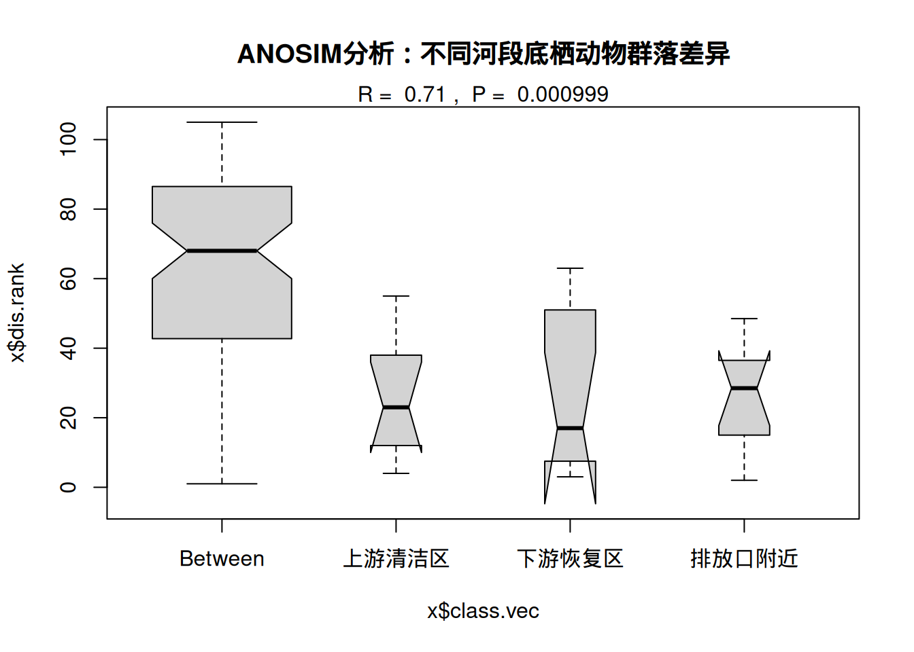
## Wisconsin double standardization
## Run 0 stress 0.1618011
## Run 1 stress 0.1678915
## Run 2 stress 0.1678915
## Run 3 stress 0.1630338
## Run 4 stress 0.1724275
## Run 5 stress 0.1698024
## Run 6 stress 0.1665195
## Run 7 stress 0.1723473
## Run 8 stress 0.1667996
## Run 9 stress 0.1692174
## Run 10 stress 0.1637253
## Run 11 stress 0.1659473
## Run 12 stress 0.1686562
## Run 13 stress 0.1698033
## Run 14 stress 0.1706665
## Run 15 stress 0.1646155
## Run 16 stress 0.1951268
## Run 17 stress 0.1618011
## ... Procrustes: rmse 2.279223e-05 max resid 4.598501e-05
## ... Similar to previous best
## Run 18 stress 0.169443
## Run 19 stress 0.1686562
## Run 20 stress 0.1618011
## ... Procrustes: rmse 2.53791e-05 max resid 4.811224e-05
## ... Similar to previous best
## *** Best solution repeated 2 timesplot(nmds_result, type = "n", main = "底栖动物群落NMDS排序")
points(nmds_result, col = as.numeric(groups), pch = 16, cex = 1.5)
ordiellipse(nmds_result, groups, col = 1:3, lwd = 2)
legend("topright", legend = levels(groups), col = 1:3, pch = 16)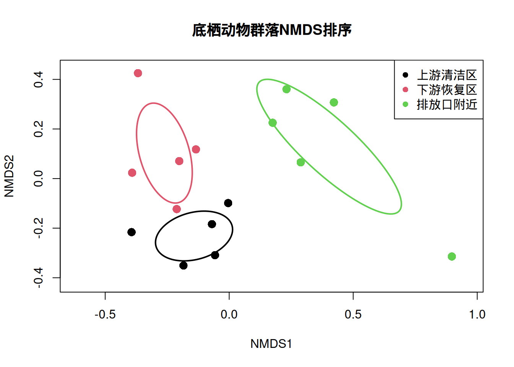
结果解释： - R统计量：取值范围-1到1，值越大表示组间差异越明显 - p值：检验组间差异的统计显著性 - 典型解读：R > 0.75表示组间分离很好；R > 0.5表示组间分离明显；R > 0.25表示组间存在分离趋势
生态学意义：如果ANOSIM检验显示显著差异（p < 0.05），表明工业废水排放确实对底栖动物群落组成产生了显著影响。结合R统计量的大小，我们可以量化这种影响的程度。这种分析为环境管理和污染控制提供了科学依据，有助于确定保护优先区和恢复目标。
7.7.3 方法学比较与生态学应用建议
多样性比较方法的选择策略：
- 单一多样性指数比较：
- 小样本情况：优先使用自助法构建置信区间
- 大样本情况：可考虑参数检验，但需验证分布假设
- 多重比较：使用自助法结合FDR控制
- 群落组成差异检验：
- 组数=2：考虑使用置换t检验或ANOSIM
- 组数>2：ANOSIM或PERMANOVA（置换多元方差分析）
- 复杂设计：使用adonis2()函数进行置换MANOVA
- 空间和时间序列分析：
- 空间自相关：使用Moran’s I置换检验
- 时间趋势：使用Mantel检验或时序置换检验
生态学研究的最佳实践：
- 样本量规划：在进行多样性研究前，通过功效分析确定合适的样本量
- 多重比较校正：当进行多个多样性指数或多个组间比较时，使用适当的校正方法
- 结果可视化：结合排序图、多样性曲线等可视化方法，增强结果的可解释性
- 生态学解释：统计显著性必须结合生态学机制进行解释，避免过度依赖p值
保护生物学应用：在保护生物学中，基于模拟的多样性检验方法特别有价值： - 濒危物种监测：小样本情况下的可靠性评估 - 保护效果评估：比较保护区内外的生物多样性 - 恢复生态学：评估生态恢复项目的成效 - 气候变化研究：监测物种组成对气候变化的响应
通过这些基于模拟的统计方法，生态学家能够更可靠地评估生物多样性的变化模式，为生态保护和管理决策提供坚实的科学基础。
7.8 物种空间分布检验
物种空间分布检验是空间生态学和景观生态学中的核心统计问题。基于模拟的假设检验方法在这些领域具有不可替代的价值，因为大多数空间统计量没有已知的理论分布，必须通过蒙特卡洛模拟来构建零分布和进行统计推断。
7.8.1 空间分布模式检验
生态学问题背景：理解物种在空间中的分布模式是生态学的基本问题。物种可能呈现三种基本的空间分布模式：随机分布、聚集分布和均匀分布。这些分布模式反映了物种的生态学特性、种内种间关系以及环境异质性的影响。
传统方法的局限性：传统的空间分布检验方法往往依赖于严格的数学假设，如： - 空间独立性假设 - 均匀生境假设 - 大样本渐近分布 这些假设在真实的生态系统中往往不成立，特别是在存在环境梯度、边界效应和空间自相关的情况下。
基于模拟的优势：蒙特卡洛模拟通过随机化过程构建空间统计量的经验分布，能够： - 考虑复杂的边界条件 - 处理空间自相关问题 - 适应异质性生境 - 提供小样本下的可靠推断
生态学实例：热带雨林树种空间分布格局研究
假设我们在巴西亚马逊雨林中设置一个1公顷的固定样地，标记了所有胸径大于10厘米的树木，并记录了它们的坐标。我们关注某个优势树种——巴西坚果树的分布模式，想要检验其分布是否显著偏离随机模式。
观测数据：在1公顷样地中记录了85棵巴西坚果树的空间坐标。
完全空间随机性（CSR）检验过程：
- 构建零模型：假设树木分布遵循完全空间随机过程
- 生成模拟点模式：在相同的样地边界内随机生成85个点
- 计算空间统计量：使用Ripley’s K函数或其他空间统计量
- 重复模拟：进行999次蒙特卡洛模拟
- 构建包络线：基于模拟结果构建统计量的置信包络
- 比较观测模式：检验观测统计量是否超出包络范围
R语言实现示例：
## Loading required package: spatstat.data## Loading required package: spatstat.univar## spatstat.univar 3.1-4## Loading required package: spatstat.geom## spatstat.geom 3.5-0## Loading required package: spatstat.random## spatstat.random 3.4-1## Loading required package: spatstat.explore## Loading required package: nlme## spatstat.explore 3.5-2.001##
## Attaching package: 'spatstat.explore'## The following object is masked from 'package:boot':
##
## envelope## Loading required package: spatstat.model## Loading required package: rpart## spatstat.model 3.4-0## Loading required package: spatstat.linnet## spatstat.linnet 3.3-1##
## spatstat 3.4-0
## For an introduction to spatstat, type 'beginner'set.seed(123)
# 创建观测点模式（简化示例）
# 假设在100m×100m的样地中有85棵树
observed_pattern <- ppp(x = runif(85, 0, 100), y = runif(85, 0, 100),
window = owin(c(0, 100), c(0, 100)))
# 计算观测Ripley's K函数
obs_K <- Kest(observed_pattern, correction = "border")
# 蒙特卡洛模拟：完全空间随机性
n_sim <- 999
sim_patterns <- list()
sim_K <- list()
for (i in 1:n_sim) {
# 生成完全空间随机点模式
sim_pattern <- rpoispp(85/10000, win = observed_pattern$window)
sim_patterns[[i]] <- sim_pattern
sim_K[[i]] <- Kest(sim_pattern, correction = "border")
}
# 构建包络线
K_envelope <- envelope(observed_pattern, Kest, nsim = 999,
correction = "border",
simulate = expression(rpoispp(85/10000)))## Generating 999 simulations by evaluating expression ...
## 1, 2, 3, ......10.........20.........30.........40.........50.........60..
## .......70.........80.........90.........100.........110.........120.........130
## .........140.........150.........160.........170.........180.........190........
## .200.........210.........220.........230.........240.........250.........260......
## ...270.........280.........290.........300.........310.........320.........330....
## .....340.........350.........360.........370.........380.........390.........400..
## .......410.........420.........430.........440.........450.........460.........470
## .........480.........490.........500.........510.........520.........530........
## .540.........550.........560.........570.........580.........590.........600......
## ...610.........620.........630.........640.........650.........660.........670....
## .....680.........690.........700.........710.........720.........730.........740..
## .......750.........760.........770.........780.........790.........800.........810
## .........820.........830.........840.........850.........860.........870........
## .880.........890.........900.........910.........920.........930.........940......
## ...950.........960.........970.........980.........990........
## 999.
##
## Done.# 可视化结果
plot(K_envelope, main = "巴西坚果树空间分布模式检验",
xlab = "距离 (m)", ylab = "K(r)",
legend = FALSE)
# 添加理论期望线（完全空间随机性）
curve(pi * x^2, from = 0, to = 25, add = TRUE, col = "red", lwd = 2)
legend("topleft", legend = c("观测K函数", "模拟包络", "理论CSR"),
col = c("black", "grey", "red"), lwd = c(1, 1, 2), lty = c(1, 1, 1))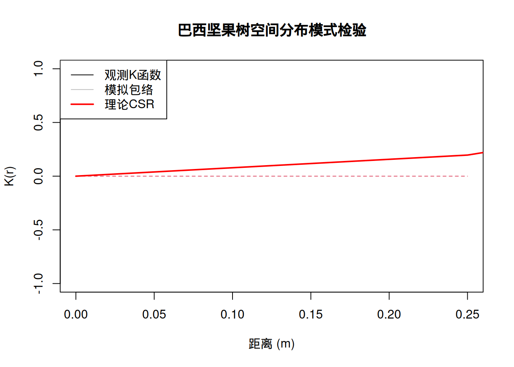
结果解释： - 如果观测K函数在包络线之上：表明空间聚集分布 - 如果观测K函数在包络线之下：表明空间均匀分布 - 如果观测K函数在包络线之内：不能拒绝随机分布假设
生态学意义：如果检验显示巴西坚果树呈现显著的空间聚集分布，这可能反映了： - 种子散布限制（种子主要落在母树附近） - 微生境偏好（特定土壤或光照条件） - 种间相互作用（如与传粉者或种子散布者的关系） 这种空间分布信息对于理解物种的生态学特性、设计保护区和预测种群动态都具有重要意义。
7.8.2 点过程模型检验
生态学问题背景：点过程模型为描述和分析空间点模式提供了系统的数学框架。在生态学中，我们不仅关心物种是否随机分布，更希望了解其分布的具体机制。点过程模型检验帮助我们评估观测数据与各种理论模型的拟合优度。
传统方法的挑战：传统的模型拟合优度检验通常基于似然比检验或信息准则，但这些方法： - 依赖于大样本渐近理论 - 难以处理复杂的空间依赖性 - 对模型误设敏感
基于模拟的优势：蒙特卡洛模拟通过从拟合模型中生成模拟数据来构建检验统计量的经验分布，能够： - 处理任何复杂的点过程模型 - 提供小样本下的可靠p值 - 检验模型的多方面拟合优度
生态学实例：珊瑚礁鱼类栖息地选择机制研究
假设我们研究印度洋珊瑚礁中某种珊瑚鱼——小丑鱼的分布模式。我们在一个珊瑚礁区域记录了小丑鱼个体的空间位置，同时测量了环境变量（珊瑚覆盖率、水深、水流速度）。我们想要检验小丑鱼的分布是否可以用环境异质性来解释。
点过程模型检验过程：
- 拟合点过程模型：使用泊松点过程模型或其他合适的模型
- 计算拟合优度统计量：如残差、伪残差或其他诊断统计量
- 生成模拟数据：从拟合模型中生成模拟点模式
- 构建经验分布：基于模拟数据计算检验统计量
- 比较观测值：检验观测统计量在经验分布中的位置
R语言实现示例：
# 点过程模型的蒙特卡洛拟合优度检验
library(spatstat)
set.seed(123)
# 模拟小丑鱼分布数据
# 创建环境协变量（珊瑚覆盖率）
coral_coverage <- as.im(function(x, y) {
0.7 * exp(-((x-50)^2 + (y-50)^2)/1000) + 0.3
}, W = owin(c(0, 100), c(0, 100)))
# 生成基于环境的小丑鱼分布（非齐次泊松过程）
lambda0 <- 0.01 # 基础强度
intensity <- eval.im(lambda0 * (1 + 2 * coral_coverage))
observed_fish <- rpoispp(intensity)
# 拟合非齐次泊松点过程模型
fit_model <- ppm(observed_fish ~ coral_coverage)
summary(fit_model)## Point process model
## Fitted to data: observed_fish
## Fitting method: maximum likelihood (Berman-Turner approximation)
## Model was fitted using glm()
## Algorithm converged
## Call:
## ppm.formula(Q = observed_fish ~ coral_coverage)
## Edge correction: "border"
## [border correction distance r = 0 ]
## --------------------------------------------------------------------------------
## Quadrature scheme (Berman-Turner) = data + dummy + weights
##
## Data pattern:
## Planar point pattern: 193 points
## Average intensity 0.0193 points per square unit
## Window: rectangle = [0, 100] x [0, 100] units
## Window area = 10000 square units
##
## Dummy quadrature points:
## 32 x 32 grid of dummy points, plus 4 corner points
## dummy spacing: 3.125 units
##
## Original dummy parameters: =
## Planar point pattern: 1028 points
## Average intensity 0.103 points per square unit
## Window: rectangle = [0, 100] x [0, 100] units
## Window area = 10000 square units
## Quadrature weights:
## (counting weights based on 32 x 32 array of rectangular tiles)
## All weights:
## range: [3.26, 9.77] total: 10000
## Weights on data points:
## range: [3.26, 4.88] total: 900
## Weights on dummy points:
## range: [3.26, 9.77] total: 9100
## --------------------------------------------------------------------------------
## FITTED :
##
## Nonstationary Poisson process
##
## ---- Intensity: ----
##
## Log intensity: ~coral_coverage
## Model depends on external covariate 'coral_coverage'
## Covariates provided:
## coral_coverage: im
##
## Fitted trend coefficients:
## (Intercept) coral_coverage
## -4.2767794 0.6330506
##
## Estimate S.E. CI95.lo CI95.hi Ztest Zval
## (Intercept) -4.2767794 0.2117614 -4.6918241 -3.861735 *** -20.196218
## coral_coverage 0.6330506 0.3749223 -0.1017836 1.367885 1.688485
##
## ----------- gory details -----
##
## Fitted regular parameters (theta):
## (Intercept) coral_coverage
## -4.2767794 0.6330506
##
## Fitted exp(theta):
## (Intercept) coral_coverage
## 0.01388732 1.88334717# 拟合优度检验：残差分析
# 计算观测残差
obs_residuals <- residuals(fit_model, type = "raw")
# 蒙特卡洛拟合优度检验
n_sim <- 999
sim_residual_stats <- numeric(n_sim)
for (i in 1:n_sim) {
# 从拟合模型中生成模拟数据
sim_pattern <- simulate(fit_model)[[1]]
# 用相同模型拟合模拟数据
sim_fit <- ppm(sim_pattern ~ coral_coverage)
# 计算模拟残差统计量（使用残差的绝对值积分）
sim_residuals <- residuals(sim_fit, type = "raw")
sim_residual_stats[i] <- integral(sim_residuals)
}
# 计算观测残差统计量
obs_residual_stat <- integral(obs_residuals)
# 计算p值
p_value <- mean(sim_residual_stats >= obs_residual_stat)
cat("观测残差统计量:", obs_residual_stat, "\n")## 观测残差统计量: -1.963697e-10## 拟合优度检验p值: 0.4444444# 可视化环境与分布的关系
plot(coral_coverage, main = "珊瑚覆盖率分布")
plot(observed_fish, add = TRUE, cols = "red", pch = 16, cex = 0.8)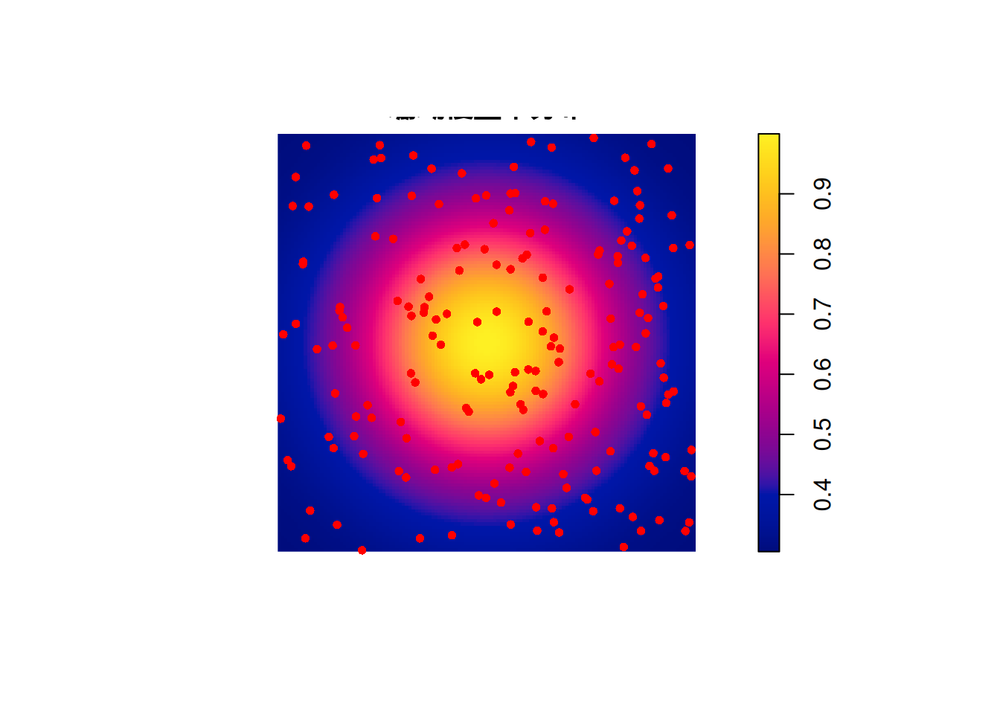
# 模型预测强度图
predicted_intensity <- predict(fit_model)
plot(predicted_intensity, main = "预测的小丑鱼分布强度")
plot(observed_fish, add = TRUE, cols = "white", pch = 1, cex = 0.6)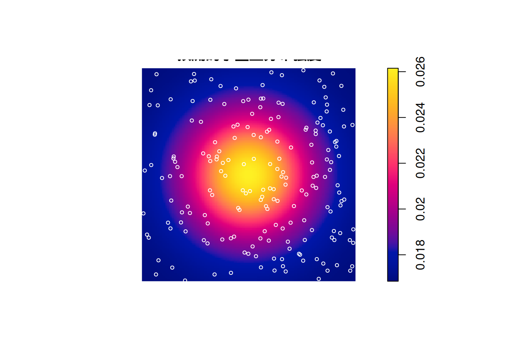
生态学意义：如果拟合优度检验显示模型拟合良好（p值不显著），表明小丑鱼的分布主要受珊瑚覆盖率的影响。这支持了”栖息地选择”假说——小丑鱼倾向于选择珊瑚覆盖率高的区域。如果模型拟合不佳，可能表明存在其他重要因素，如： - 种内竞争导致的空间排斥 - 捕食风险的空间变异 - 社会行为的空间组织
7.8.3 空间生态学的统计挑战与解决方案
边界效应处理：在空间分析中，边界效应是一个重要问题。基于模拟的方法可以通过： - 使用相同的边界条件进行模拟 - 应用边界校正方法 - 使用周期性边界条件 来有效处理边界效应。
空间自相关：生态数据通常存在空间自相关，这违反了传统统计的独立性假设。蒙特卡洛方法通过： - 保持空间结构进行随机化 - 使用条件模拟方法 - 应用空间自回归模型 来正确处理空间依赖性。
多重尺度分析：生态过程在不同空间尺度上运作。基于模拟的方法支持： - 多尺度空间分析 - 尺度依赖性检验 - 最优尺度选择
R语言中的空间分析工具：
##
## Attaching package: 'gstat'## The following object is masked from 'package:spatstat.explore':
##
## idw## Warning: no DISPLAY variable so Tk is not available## --------------------------------------------------------------
## Analysis of Geostatistical Data
## For an Introduction to geoR go to http://www.leg.ufpr.br/geoR
## geoR version 1.9-6 (built on 2025-08-29) is now loaded
## --------------------------------------------------------------## Registered S3 methods overwritten by 'adegraphics':
## method from
## biplot.dudi ade4
## kplot.foucart ade4
## kplot.mcoa ade4
## kplot.mfa ade4
## kplot.pta ade4
## kplot.sepan ade4
## kplot.statis ade4
## scatter.coa ade4
## scatter.dudi ade4
## scatter.nipals ade4
## scatter.pco ade4
## score.acm ade4
## score.mix ade4
## score.pca ade4
## screeplot.dudi ade4## Registered S3 method overwritten by 'ape':
## method from
## plot.mst spdep## Registered S3 method overwritten by 'adespatial':
## method from
## plot.multispati adegraphics##
## Attaching package: 'adespatial'## The following object is masked from 'package:spatstat.model':
##
## msr# 空间自相关检验示例
library(spdep)
# 创建空间权重矩阵
coords <- cbind(runif(50), runif(50))
nb <- knn2nb(knearneigh(coords, k = 5))
w <- nb2listw(nb)
# 模拟空间自相关数据
sp_data <- rnorm(50)
# 引入空间自相关
for (i in 1:10) {
sp_data <- 0.5 * lag.listw(w, sp_data) + rnorm(50)
}
# Moran's I置换检验
moran_test <- moran.mc(sp_data, w, nsim = 999)
print(moran_test)##
## Monte-Carlo simulation of Moran I
##
## data: sp_data
## weights: w
## number of simulations + 1: 1000
##
## statistic = 0.055655, observed rank = 832, p-value = 0.168
## alternative hypothesis: greater7.8.4 生态学应用与保护意义
保护生物学应用： - 保护区设计：基于物种空间分布模式优化保护区网络 - 栖息地破碎化评估：检验生境破碎对物种分布的影响 - 入侵物种监测：检测入侵物种的空间扩散模式
恢复生态学应用： - 恢复效果评估：比较恢复前后物种空间分布的变化 - 种子源定位：识别重要的种群补充源 - 连通性分析：评估生境斑块间的功能连通性
气候变化研究： - 分布范围变化：监测物种分布范围对气候变化的响应 - 分布边界移动：检验分布边界的气候驱动因素 - 避难所识别：识别气候变化的潜在避难所
通过基于模拟的空间分布检验方法，生态学家能够更可靠地推断物种空间分布的形成机制，为理解生态过程、预测生态系统变化和制定有效的保护策略提供坚实的科学基础。这些方法特别适合处理生态学中常见的复杂空间模式和小样本问题，是空间生态学研究中不可或缺的统计工具。
7.9 系统发育信号检验
系统发育信号检验是进化生态学和比较生物学中的核心统计问题，旨在检验物种性状是否受到系统发育历史的影响。基于模拟的假设检验方法在这些分析中发挥着关键作用，特别是当性状的演化过程复杂或样本量有限时。
7.9.1 系统发育保守性检验
生态学问题背景：系统发育保守性描述的是亲缘关系较近的物种在性状上比随机期望更为相似的现象。理解性状的系统发育信号对于揭示生态适应的进化历史、预测物种对环境变化的响应以及指导保护策略都具有重要意义。
传统方法的局限性：传统的系统发育信号检验方法（如Blomberg’s K检验、Pagel’s λ检验）依赖于特定的演化模型假设，如布朗运动模型。然而，这些假设在真实的生态系统中往往过于简化： - 布朗运动假设性状演化是随机的，忽略了自然选择的作用 - 模型对异常物种或快速辐射事件敏感 - 在小样本情况下，理论分布的近似可能不准确 - 难以处理复杂的演化过程，如性状的趋同进化
基于模拟的优势：蒙特卡洛模拟通过随机化系统发育树尖端的性状值来构建零分布，不依赖于特定的演化模型假设，特别适合处理： - 非标准演化模型的检验 - 小样本系统发育分析 - 复杂性状演化模式的识别 - 多种系统发育信号指标的比较
生态学实例：植物功能性状的系统发育信号分析
假设我们研究温带森林中30种木本植物的功能性状（如比叶面积、木材密度、最大树高）是否具有系统发育保守性。我们拥有这些物种的系统发育树和性状测量数据。
蒙特卡洛检验过程：
- 计算观测系统发育信号：使用Blomberg’s K统计量或Pagel’s λ统计量
- 构建零模型：假设性状在系统发育树尖端的分布是随机的
- 随机化模拟：保持系统发育树结构不变，随机重排性状值在树尖端的分布
- 构建经验分布：重复模拟1000次，每次计算系统发育信号统计量
- 计算p值：比较观测统计量与经验分布的位置
R语言实现示例：
##
## Attaching package: 'ape'## The following objects are masked from 'package:spatstat.geom':
##
## edges, rotatelibrary(picante)
# 模拟系统发育树和性状数据
set.seed(123)
tree <- rtree(30) # 生成30个物种的系统发育树
trait_data <- rnorm(30, mean = 10, sd = 2) # 模拟性状数据
names(trait_data) <- tree$tip.label
# 计算观测Blomberg's K统计量
obs_K <- Kcalc(trait_data, tree)
# 蒙特卡洛模拟
n_sim <- 1000
sim_K <- numeric(n_sim)
for (i in 1:n_sim) {
# 随机重排性状值（保持系统发育树结构）
sim_trait <- sample(trait_data)
names(sim_trait) <- tree$tip.label
# 计算模拟的K统计量
sim_K[i] <- Kcalc(sim_trait, tree)
}
# 计算经验p值
p_value <- mean(sim_K >= as.numeric(obs_K))
cat("观测Blomberg's K统计量:", obs_K, "\n")## 观测Blomberg's K统计量: 0.3065341## 经验p值: 0.446## Loading required package: maps##
## Attaching package: 'phytools'## The following object is masked from 'package:spatstat.geom':
##
## rescale## The following object is masked from 'package:vegan':
##
## scores# Pagel's λ检验
lambda_test <- phylosig(tree, trait_data, method = "lambda", test = TRUE)
print(lambda_test)##
## Phylogenetic signal lambda : 0.00132165
## logL(lambda) : -59.7517
## LR(lambda=0) : 0.000110223
## P-value (based on LR test) : 0.991623# 可视化系统发育信号
# 绘制系统发育树和性状值
plotTree(tree, type = "fan", fsize = 0.8)
tiplabels(pch = 21, bg = colorRampPalette(c("blue", "red"))(30)[rank(trait_data)],
cex = 1.5)
# 添加性状值颜色图例
legend("bottomleft", legend = c("低性状值", "高性状值"),
fill = c("blue", "red"), bty = "n")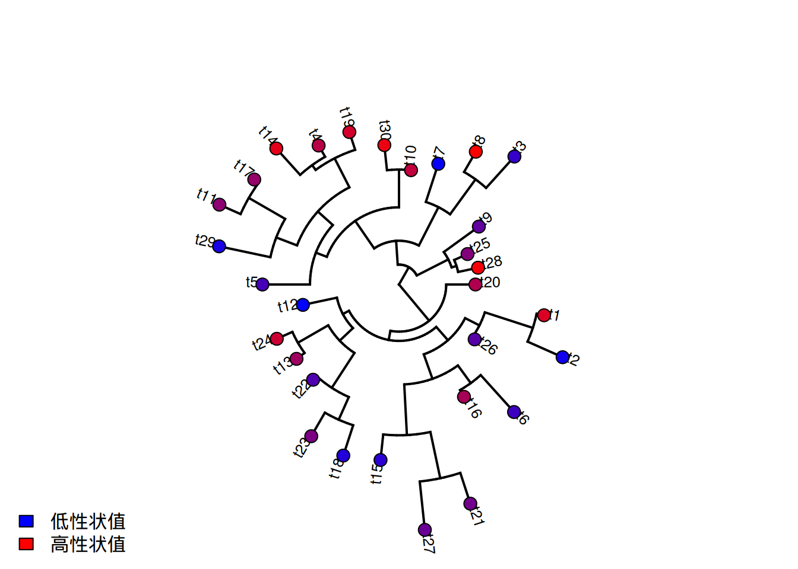
生态学意义：如果检验显示显著的系统发育信号（p < 0.05），表明这些功能性状在亲缘关系较近的物种间更为相似。这支持了”系统发育生态位保守性”假说——物种倾向于保留祖先的生态特性。这种信息对于理解群落组装机制、预测物种对气候变化的响应以及设计基于系统发育多样性的保护策略都具有重要价值。
7.9.2 系统发育独立对比
生态学问题背景：在比较生物学研究中，我们需要检验不同性状间的生态关系，但由于物种间存在系统发育相关性，传统的统计方法可能产生有偏的结论。系统发育独立对比通过去除系统发育影响，为性状间的生态关系检验提供了正确的统计框架。
传统方法的挑战：传统的相关性分析或回归分析假设观测值相互独立，但系统发育相关的物种违背了这一假设： - 亲缘关系较近的物种在多个性状上可能同时相似 - 这种共有的系统发育历史可能产生虚假的相关性 - 传统方法可能高估或低估性状间的真实生态关系
基于模拟的解决方案：置换检验通过随机化系统发育树的结构或性状值的分布来构建零分布，特别适合处理： - 复杂系统发育结构的校正 - 多种性状组合的联合检验 - 非标准系统发育模型的验证
生态学实例：植物防御性状与生长速率的关系研究
假设我们研究热带雨林中40种树种的化学防御物质含量与生长速率的关系。由于这些树种具有系统发育相关性，我们需要使用系统发育独立对比来正确检验这种关系。
置换检验过程：
- 计算观测相关性：使用系统发育独立对比计算防御性状与生长速率的相关系数
- 随机化系统发育结构：随机重排系统发育树的拓扑结构或分支长度
- 构建零分布：重复随机化1000次，每次计算相关性统计量
- 计算p值：比较观测相关性与零分布的位置
R语言实现示例：
# 系统发育独立对比的置换检验
library(ape)
library(geiger)
# 模拟系统发育树和性状数据
set.seed(123)
tree <- rtree(40) # 40个物种的系统发育树
# 模拟相关性状（受系统发育影响）
defense_trait <- rTraitCont(tree, model = "BM", sigma = 1)
growth_rate <- 0.6 * defense_trait + 0.4 * rTraitCont(tree, model = "BM", sigma = 1) + rnorm(40, 0, 0.5)
# 计算系统发育独立对比
pic_defense <- pic(defense_trait, tree)
pic_growth <- pic(growth_rate, tree)
# 计算观测相关性（去除系统发育影响后）
obs_cor <- cor(pic_defense, pic_growth)
# 置换检验：随机化系统发育结构
n_perm <- 1000
perm_cor <- numeric(n_perm)
for (i in 1:n_perm) {
# 随机重排系统发育树尖端的性状关联
perm_tree <- tree
perm_tree$tip.label <- sample(perm_tree$tip.label)
# 计算置换后的PIC相关性
perm_pic_defense <- pic(defense_trait[perm_tree$tip.label], perm_tree)
perm_pic_growth <- pic(growth_rate[perm_tree$tip.label], perm_tree)
perm_cor[i] <- cor(perm_pic_defense, perm_pic_growth)
}
# 计算p值
p_value <- mean(abs(perm_cor) >= abs(obs_cor))
cat("观测PIC相关性:", obs_cor, "\n")## 观测PIC相关性: 0.7710981## 经验p值: 0.973# 可视化结果
par(mfrow = c(1, 2))
# 原始性状的相关性图
plot(defense_trait, growth_rate, pch = 16, col = "blue",
xlab = "防御物质含量", ylab = "生长速率",
main = "原始性状相关性")
abline(lm(growth_rate ~ defense_trait), col = "red", lwd = 2)
# 系统发育独立对比的相关性图
plot(pic_defense, pic_growth, pch = 16, col = "darkgreen",
xlab = "防御物质PIC", ylab = "生长速率PIC",
main = "系统发育独立对比相关性")
abline(lm(pic_growth ~ pic_defense), col = "red", lwd = 2)
# 添加相关性系数
text(0.8 * max(pic_defense), 0.9 * max(pic_growth),
paste("r =", round(obs_cor, 3)), col = "red")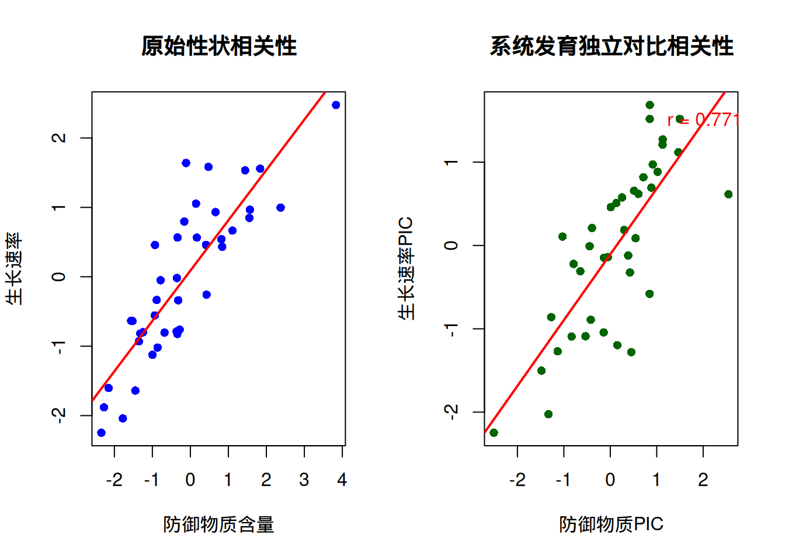
生态学意义：通过系统发育独立对比的置换检验，我们可以更可靠地推断防御性状与生长速率之间的生态权衡关系。如果检验显示显著的正相关（p < 0.05），表明在去除系统发育影响后，防御物质含量高的物种确实具有较慢的生长速率，支持了”生长-防御权衡”假说。这种分析为理解植物生活史策略的进化提供了重要证据。
7.9.3 方法学比较与生态学应用建议
系统发育信号检验方法的选择策略：
- Blomberg’s K检验：
- 适用于连续性状的系统发育信号检验
- 基于性状在系统发育树上的方差比较
- K > 1表示比布朗运动期望更强的系统发育信号
- Pagel’s λ检验：
- 通过最大似然估计检验系统发育信号
- λ参数衡量系统发育对性状变异的解释程度
- 可以检验多种演化模型的拟合优度
- 置换检验方法：
- 不依赖于特定的演化模型假设
- 适用于小样本和非标准性状分布
- 可以灵活检验多种系统发育信号指标
生态学研究的最佳实践：
- 多方法验证：使用多种系统发育信号检验方法相互验证
- 敏感性分析：检验结果对系统发育树不确定性的敏感性
- 生态学解释：结合生态学机制解释系统发育信号的意义
- 保护应用：在保护生物学中考虑系统发育多样性的价值
进化生态学应用：系统发育信号检验在进化生态学中具有广泛的应用价值： - 适应性进化研究：检验性状是否受到自然选择的作用 - 群落生态学：理解系统发育对群落组装的约束 - 保护生物学：基于系统发育多样性设计保护优先区 - 气候变化研究：预测物种对气候变化的系统发育响应模式
通过这些基于模拟的系统发育分析方法，生态学家能够更可靠地推断性状的进化历史，为理解生物多样性的形成机制和预测生态系统对全球变化的响应提供坚实的进化生物学基础。
7.10 生态学零模型检验
7.10.1 零模型的基本概念与生态学意义
生态学问题背景：零模型（Null Model）是生态学中用于检验观测模式是否显著偏离随机期望的统计工具。在生态学研究中，我们经常观察到各种复杂的生态模式——物种在群落中的特定组合、生态网络中物种间的相互作用、空间分布中的聚集或分散模式等。这些模式是真实的生态过程（如竞争、捕食、环境过滤）的结果，还是仅仅反映了随机过程？零模型为我们提供了回答这个问题的严谨统计框架。
零模型的核心思想：零模型通过构建一个”随机期望”来检验观测模式。其基本逻辑是：如果观测模式与随机期望没有显著差异，那么我们可以认为观测模式可能只是随机过程的产物；如果观测模式显著偏离随机期望，那么可能存在某种生态过程在起作用。
生态学意义：零模型检验在生态学中具有广泛的应用价值。它帮助我们区分真实的生态规律与随机波动，为理解群落组装机制、物种共存模式、生态网络结构等基本生态学问题提供了重要的统计工具。
7.10.2 群落组装零模型检验
生态学问题背景：群落组装是生态学的核心问题之一。我们想要理解为什么特定的物种会在特定的群落中共同出现。是环境过滤、种间竞争、扩散限制等生态过程决定了群落的物种组成，还是物种的组合只是随机过程的结果？
传统方法的局限性：传统的群落分析方法（如多样性指数、相似性分析）虽然能够描述群落的特征，但难以区分这些特征是生态过程的结果还是随机期望。传统的统计检验往往依赖于特定的分布假设，而这些假设在复杂的群落数据中往往不成立。
基于模拟的优势：群落组装零模型通过随机化群落矩阵来构建期望分布，不依赖于特定的分布假设，特别适合处理： - 复杂的物种-环境关系 - 多物种间的相互作用 - 空间和时间异质性 - 小样本群落数据
生态学实例：检验热带雨林树种共存机制
假设我们研究亚马逊热带雨林中树种的共存机制。我们在一个1公顷的固定样地中记录了所有胸径大于10厘米的树木，获得了物种组成数据。我们想要检验树种在群落中的共存是否随机，还是受到生态过程的约束。
零模型检验过程：
构建零模型：基于不同的随机化算法构建零模型
- 固定行和列总和：保持物种出现频率和样点物种丰富度不变
- 固定行总和：只保持物种出现频率不变
- 固定列总和：只保持样点物种丰富度不变
计算检验统计量：使用群落结构指数，如：
- C-score：衡量物种共现的非随机性
- Checkerboard score：检测竞争排斥模式
- Nestedness：检验群落的嵌套结构
随机化模拟：重复模拟1000次，每次计算检验统计量
构建经验分布：基于模拟结果构建统计量的零分布
计算p值：比较观测统计量与零分布的位置
R语言实现示例：
## Loading required package: sna## Loading required package: statnet.common##
## Attaching package: 'statnet.common'## The following objects are masked from 'package:base':
##
## attr, order, replace## Loading required package: network##
## 'network' 1.19.0 (2024-12-08), part of the Statnet Project
## * 'news(package="network")' for changes since last version
## * 'citation("network")' for citation information
## * 'https://statnet.org' for help, support, and other information## sna: Tools for Social Network Analysis
## Version 2.8 created on 2024-09-07.
## copyright (c) 2005, Carter T. Butts, University of California-Irvine
## For citation information, type citation("sna").
## Type help(package="sna") to get started.##
## Attaching package: 'sna'## The following objects are masked from 'package:ape':
##
## consensus, degree## The following object is masked from 'package:nlme':
##
## gapply## The following objects are masked from 'package:spatstat.geom':
##
## is.connected, maxflow## The following object is masked from 'package:coin':
##
## rperm## This is bipartite 2.22.
## For latest changes see versionlog in ?"bipartite-package". For citation see: citation("bipartite").
## Have a nice time plotting and analysing two-mode networks.##
## Attaching package: 'bipartite'## The following object is masked from 'package:vegan':
##
## nullmodel# 模拟热带雨林群落数据（物种×样点矩阵）
set.seed(123)
n_species <- 30
n_sites <- 20
# 创建环境梯度
env_gradient <- seq(1, 10, length.out = n_sites)
# 模拟物种对环境梯度的响应（非随机群落）
comm_matrix <- matrix(0, nrow = n_species, ncol = n_sites)
rownames(comm_matrix) <- paste("物种", 1:n_species)
colnames(comm_matrix) <- paste("样点", 1:n_sites)
# 物种对环境的最适值
species_optima <- runif(n_species, 2, 8)
species_tolerance <- runif(n_species, 0.5, 2)
# 基于环境梯度的物种分布
for (i in 1:n_species) {
for (j in 1:n_sites) {
# 高斯响应曲线
prob <- exp(-(env_gradient[j] - species_optima[i])^2 / (2 * species_tolerance[i]^2))
comm_matrix[i, j] <- rbinom(1, 1, prob)
}
}
# 计算观测C-score（物种共现非随机性）
calc_c_score <- function(mat) {
n_spp <- nrow(mat)
c_scores <- numeric(choose(n_spp, 2))
idx <- 1
for (i in 1:(n_spp-1)) {
for (j in (i+1):n_spp) {
# 计算物种i和j的共现模式
both_present <- sum(mat[i, ] == 1 & mat[j, ] == 1)
only_i <- sum(mat[i, ] == 1 & mat[j, ] == 0)
only_j <- sum(mat[i, ] == 0 & mat[j, ] == 1)
c_scores[idx] <- only_i * only_j
idx <- idx + 1
}
}
return(mean(c_scores))
}
obs_c_score <- calc_c_score(comm_matrix)
# 零模型模拟：固定行和列总和
n_sim <- 1000
sim_c_scores <- numeric(n_sim)
for (i in 1:n_sim) {
# 使用swap算法随机化群落矩阵
sim_matrix <- comm_matrix
# 简单的随机化：保持行和列总和不变
# 在实际应用中可以使用更复杂的算法如swap算法
sim_matrix <- r2dtable(1, rowSums(comm_matrix), colSums(comm_matrix))[[1]]
sim_matrix[sim_matrix > 0] <- 1
sim_c_scores[i] <- calc_c_score(sim_matrix)
}
# 计算p值
p_value <- mean(sim_c_scores >= obs_c_score)
cat("观测C-score:", obs_c_score, "\n")## 观测C-score: 13.67126## 零模型检验p值: 0# 可视化结果
library(ggplot2)
# 创建零分布可视化数据
null_dist_df <- data.frame(c_score = sim_c_scores)
ggplot(null_dist_df, aes(x = c_score)) +
geom_histogram(fill = "lightblue", alpha = 0.7, bins = 30) +
geom_vline(xintercept = obs_c_score, color = "red", size = 1) +
annotate("text", x = obs_c_score * 1.1, y = 50,
label = paste("观测C-score =", round(obs_c_score, 2)), color = "red") +
labs(title = "群落组装零模型检验",
x = "C-score", y = "频数",
subtitle = paste("p值 =", round(p_value, 4))) +
theme_minimal()## Warning: Using `size` aesthetic for lines was
## deprecated in ggplot2 3.4.0.
## ℹ Please use `linewidth` instead.
## This warning is displayed once every 8 hours.
## Call `lifecycle::last_lifecycle_warnings()`
## to see where this warning was generated.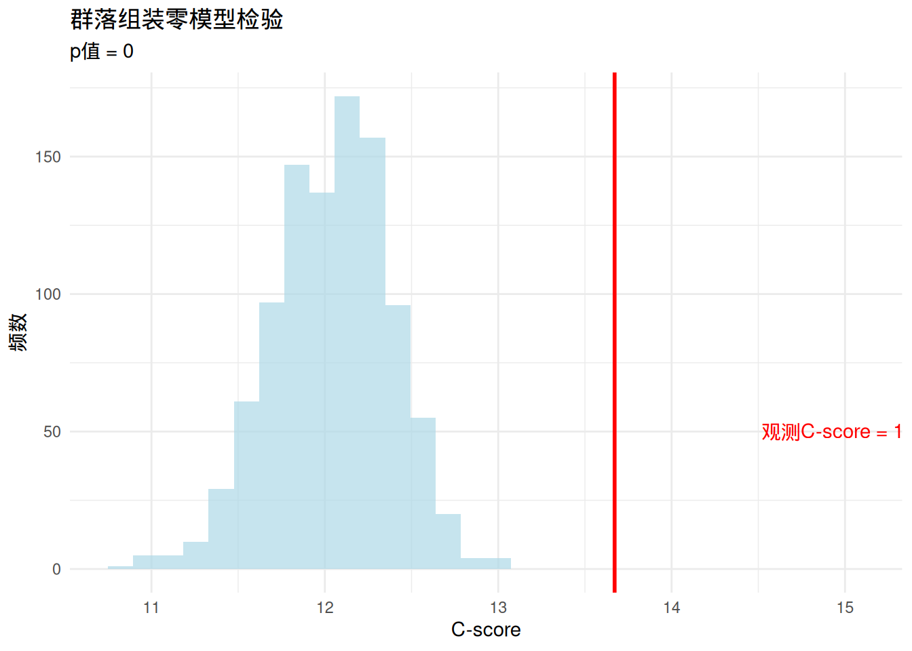
# 群落矩阵热图
library(reshape2)
comm_melt <- melt(comm_matrix)
colnames(comm_melt) <- c("物种", "样点", "存在")
ggplot(comm_melt, aes(x = 样点, y = 物种, fill = factor(存在))) +
geom_tile() +
scale_fill_manual(values = c("white", "darkgreen")) +
labs(title = "热带雨林群落物种分布",
x = "样点", y = "物种", fill = "存在") +
theme_minimal() +
theme(axis.text.x = element_text(angle = 45, hjust = 1),
axis.text.y = element_text(size = 6))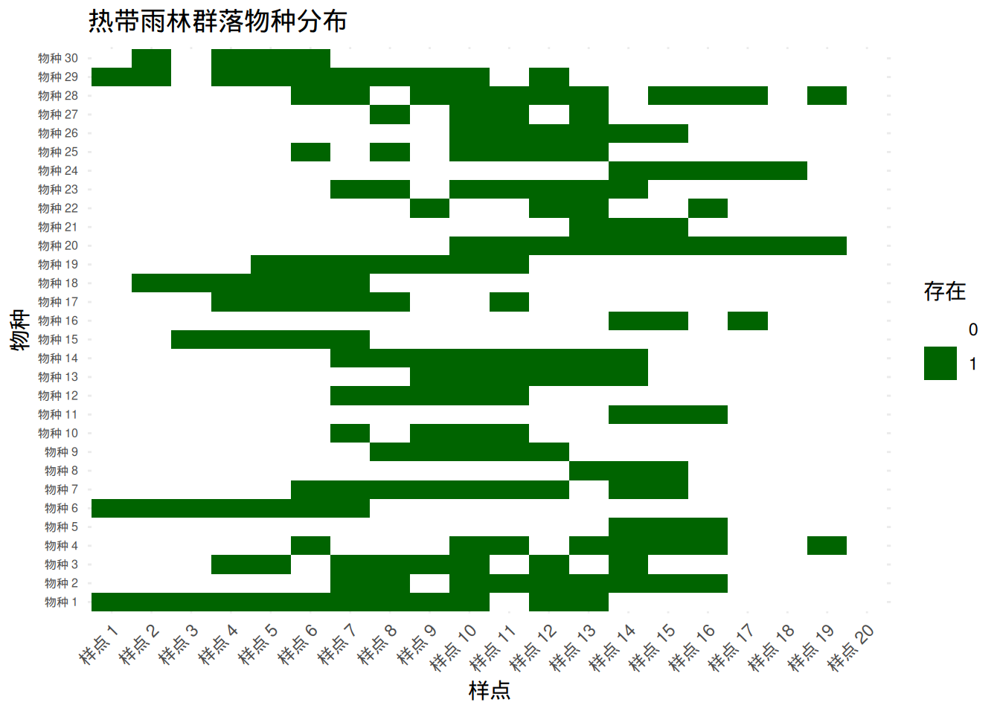
生态学意义：如果零模型检验显示显著的C-score（p < 0.05），表明树种的共现模式显著偏离随机期望。较高的C-score通常表示物种间存在竞争排斥——物种倾向于避免在相同的样点中共存。这支持了”竞争排斥”假说在热带雨林群落组装中的重要性。
7.10.3 生态网络零模型检验
生态学问题背景：生态网络（如食物网、传粉网络、种子散布网络）是生态系统中物种间相互作用的复杂表现形式。理解生态网络的结构特征对于揭示生态系统的稳定性和功能至关重要。我们想要知道观测到的网络结构（如模块化、嵌套性、连接性）是否显著偏离随机期望。
传统方法的挑战：传统的网络分析方法主要描述网络的结构特征，但难以评估这些特征是否具有统计显著性。网络结构的复杂性使得理论分布难以确定，特别是对于真实生态网络中常见的非随机模式。
基于模拟的优势：生态网络零模型通过随机化网络结构来构建期望分布，能够： - 检验网络拓扑特征的统计显著性 - 区分不同生态过程对网络结构的影响 - 处理各种类型的生态网络（二分网络、加权网络等） - 考虑网络的生物学约束（如物种的生态位）
生态学实例：检验传粉网络的嵌套结构
假设我们研究地中海灌丛生态系统的传粉网络。我们记录了植物物种与传粉昆虫物种之间的相互作用，构建了一个传粉网络。我们想要检验这个网络是否具有显著的嵌套结构——一种常见的生态网络模式，其中特化物种倾向于与泛化物种的子集相互作用。
零模型检验过程：
构建零模型：使用不同的随机化算法
- 固定度分布：保持每个物种的连接数不变
- 固定连接数：只保持网络的总连接数不变
- 概率模型：基于物种特性生成随机网络
计算检验统计量：使用网络嵌套性指数，如：
- NODF（Nestedness based on Overlap and Decreasing Fill）
- 温度（Matrix Temperature）
- 二分网络嵌套性
随机化模拟：重复模拟1000次，每次计算嵌套性指数
构建经验分布：基于模拟结果构建嵌套性指数的零分布
计算p值：比较观测嵌套性与零分布的位置
R语言实现示例：
##
## Attaching package: 'igraph'## The following object is masked from 'package:bipartite':
##
## strength## The following objects are masked from 'package:sna':
##
## betweenness, bonpow, closeness, components, degree, dyad.census,
## evcent, hierarchy, is.connected, neighborhood, triad.census## The following objects are masked from 'package:network':
##
## %c%, %s%, add.edges, add.vertices, delete.edges, delete.vertices,
## get.edge.attribute, get.edges, get.vertex.attribute, is.bipartite,
## is.directed, list.edge.attributes, list.vertex.attributes,
## set.edge.attribute, set.vertex.attribute## The following objects are masked from 'package:ape':
##
## degree, edges, mst, ring## The following objects are masked from 'package:spatstat.geom':
##
## diameter, edges, is.connected, vertices## The following object is masked from 'package:vegan':
##
## diversity## The following object is masked from 'package:permute':
##
## permute## The following objects are masked from 'package:stats':
##
## decompose, spectrum## The following object is masked from 'package:base':
##
## union# 模拟传粉网络数据（植物×传粉者矩阵）
set.seed(123)
n_plants <- 15
n_pollinators <- 20
# 创建嵌套结构的传粉网络
pollination_network <- matrix(0, nrow = n_plants, ncol = n_pollinators)
rownames(pollination_network) <- paste("植物", 1:n_plants)
colnames(pollination_network) <- paste("传粉者", 1:n_pollinators)
# 生成嵌套结构
for (i in 1:n_plants) {
for (j in 1:n_pollinators) {
# 嵌套结构：特化物种与泛化物种的子集相互作用
prob <- (n_plants - i + 1) / n_plants * (n_pollinators - j + 1) / n_pollinators
pollination_network[i, j] <- rbinom(1, 1, prob * 0.8)
}
}
# 计算观测嵌套性（NODF）
obs_nestedness <- nested(pollination_network, method = "NODF2")
# 零模型模拟：固定行和列总和
n_sim <- 1000
sim_nestedness <- numeric(n_sim)
for (i in 1:n_sim) {
# 使用nullmodel函数生成零模型
sim_network <- pollination_network
# 保持行和列总和不变的随机化
sim_network <- r2dtable(1, rowSums(pollination_network),
colSums(pollination_network))[[1]]
sim_network[sim_network > 0] <- 1
sim_nestedness[i] <- nested(sim_network, method = "NODF2")
}
# 计算p值
p_value <- mean(sim_nestedness >= obs_nestedness)
cat("观测嵌套性(NODF):", obs_nestedness, "\n")## 观测嵌套性(NODF): 25.46973## 零模型检验p值: 0.014# 可视化结果
library(ggplot2)
# 创建零分布可视化数据
null_dist_df <- data.frame(nestedness = sim_nestedness)
ggplot(null_dist_df, aes(x = nestedness)) +
geom_histogram(fill = "lightblue", alpha = 0.7, bins = 30) +
geom_vline(xintercept = obs_nestedness, color = "red", size = 1) +
annotate("text", x = obs_nestedness * 1.1, y = 50,
label = paste("观测嵌套性 =", round(obs_nestedness, 2)), color = "red") +
labs(title = "传粉网络嵌套性零模型检验",
x = "嵌套性(NODF)", y = "频数",
subtitle = paste("p值 =", round(p_value, 4))) +
theme_minimal()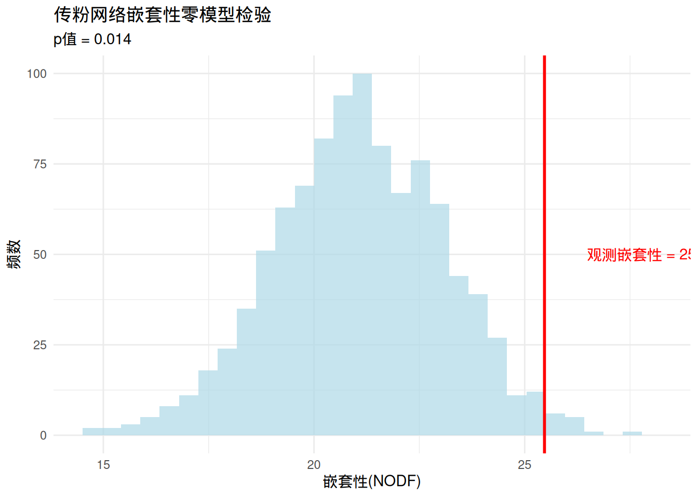
## Warning: `graph.incidence()` was deprecated in igraph
## 2.0.0.
## ℹ Please use
## `graph_from_biadjacency_matrix()` instead.
## This warning is displayed once every 8 hours.
## Call `lifecycle::last_lifecycle_warnings()`
## to see where this warning was generated.# 设置顶点颜色和形状
V(bipartite_graph)$color <- ifelse(V(bipartite_graph)$type, "lightgreen", "yellow")
V(bipartite_graph)$shape <- ifelse(V(bipartite_graph)$type, "square", "circle")
V(bipartite_graph)$size <- 8
V(bipartite_graph)$label.cex <- 0.7
# 绘制网络图
plot(bipartite_graph,
layout = layout.bipartite,
main = "传粉网络结构",
vertex.label = NA)
# 添加图例
legend("bottomleft",
legend = c("植物", "传粉者"),
pch = c(15, 16),
col = c("lightgreen", "yellow"),
bty = "n")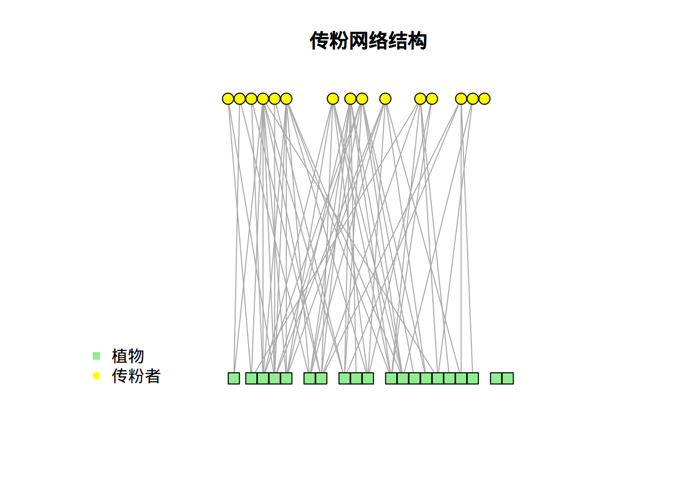
# 网络矩阵热图
library(reshape2)
network_melt <- melt(pollination_network)
colnames(network_melt) <- c("植物", "传粉者", "相互作用")
ggplot(network_melt, aes(x = 传粉者, y = 植物, fill = factor(相互作用))) +
geom_tile() +
scale_fill_manual(values = c("white", "purple")) +
labs(title = "传粉网络相互作用矩阵",
x = "传粉者", y = "植物", fill = "相互作用") +
theme_minimal() +
theme(axis.text.x = element_text(angle = 45, hjust = 1, size = 8),
axis.text.y = element_text(size = 8))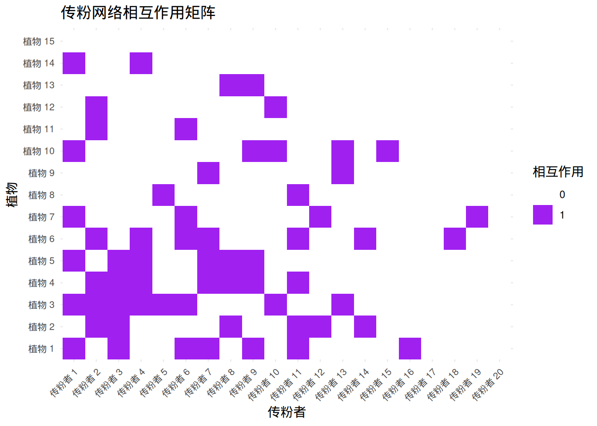
生态学意义：如果零模型检验显示显著的嵌套性（p < 0.05），表明传粉网络的结构确实具有嵌套模式。嵌套结构通常被认为能够增强生态网络的稳定性和韧性——当某些物种消失时，嵌套结构有助于维持网络的连接性。这种结构信息对于理解传粉服务的稳定性和设计保护策略具有重要意义。
7.10.4 零模型检验的方法学比较与选择
不同类型的零模型算法：
- 完全随机模型：
- 算法：完全随机重排相互作用
- 适用场景：检验网络连接性的非随机性
- 生态学意义：最基本的零模型，检验是否存在任何非随机结构
- 固定度分布模型：
- 算法：保持每个物种的连接数不变
- 适用场景：检验网络结构的其他特征（如嵌套性、模块化）
- 生态学意义：考虑物种生态位宽度的约束
- 概率模型：
- 算法：基于物种特性生成随机网络
- 适用场景：检验特定生态假说
- 生态学意义：整合生物学知识构建更真实的零模型
生态学研究的最佳实践：
- 多模型比较：使用多种零模型算法相互验证
- 生物学合理性：选择与生态过程相符的随机化算法
- 敏感性分析：检验结果对不同零模型算法的敏感性
- 生态学解释：结合生态学机制解释统计结果
R语言中的零模型分析工具：
# 常用的零模型分析包
library(vegan) # 群落生态学零模型
library(bipartite) # 二分网络零模型
library(igraph) # 网络分析
library(EcoSimR) # 生态学零模型## Loading required package: MASS##
## Attaching package: 'MASS'## The following object is masked from 'package:spatstat.geom':
##
## area##
## Attaching package: 'spaa'## The following object is masked from 'package:sna':
##
## geodist# EcoSimR包中的零模型分析示例
library(EcoSimR)
# 物种共现零模型
# 使用固定行和列总和的算法
cooc_null <- cooc_null_model(comm_matrix,
algo = "sim9",
nReps = 1000)## Burn-in Progress
##
|
| | 0%
|
| | 1%
|
|= | 1%
|
|= | 2%
|
|== | 2%
|
|== | 3%
|
|== | 4%
|
|=== | 4%
|
|=== | 5%
|
|==== | 5%
|
|==== | 6%
|
|===== | 6%
|
|===== | 7%
|
|===== | 8%
|
|====== | 8%
|
|====== | 9%
|
|======= | 9%
|
|======= | 10%
|
|======= | 11%
|
|======== | 11%
|
|======== | 12%
|
|========= | 12%
|
|========= | 13%
|
|========= | 14%
|
|========== | 14%
|
|========== | 15%
|
|=========== | 15%
|
|=========== | 16%
|
|============ | 16%
|
|============ | 17%
|
|============ | 18%
|
|============= | 18%
|
|============= | 19%
|
|============== | 19%
|
|============== | 20%
|
|============== | 21%
|
|=============== | 21%
|
|=============== | 22%
|
|================ | 22%
|
|================ | 23%
|
|================ | 24%
|
|================= | 24%
|
|================= | 25%
|
|================== | 25%
|
|================== | 26%
|
|=================== | 26%
|
|=================== | 27%
|
|=================== | 28%
|
|==================== | 28%
|
|==================== | 29%
|
|===================== | 29%
|
|===================== | 30%
|
|===================== | 31%
|
|====================== | 31%
|
|====================== | 32%
|
|======================= | 32%
|
|======================= | 33%
|
|======================= | 34%
|
|======================== | 34%
|
|======================== | 35%
|
|========================= | 35%
|
|========================= | 36%
|
|========================== | 36%
|
|========================== | 37%
|
|========================== | 38%
|
|=========================== | 38%
|
|=========================== | 39%
|
|============================ | 39%
|
|============================ | 40%
|
|============================ | 41%
|
|============================= | 41%
|
|============================= | 42%
|
|============================== | 42%
|
|============================== | 43%
|
|============================== | 44%
|
|=============================== | 44%
|
|=============================== | 45%
|
|================================ | 45%
|
|================================ | 46%
|
|================================= | 46%
|
|================================= | 47%
|
|================================= | 48%
|
|================================== | 48%
|
|================================== | 49%
|
|=================================== | 49%
|
|=================================== | 50%
## Swap Progress
##
|
| | 0%
|
| | 1%
|
|= | 1%
|
|= | 2%
|
|== | 2%
|
|== | 3%
|
|== | 4%
|
|=== | 4%
|
|=== | 5%
|
|==== | 5%
|
|==== | 6%
|
|===== | 6%
|
|===== | 7%
|
|===== | 8%
|
|====== | 8%
|
|====== | 9%
|
|======= | 9%
|
|======= | 10%
|
|======= | 11%
|
|======== | 11%
|
|======== | 12%
|
|========= | 12%
|
|========= | 13%
|
|========= | 14%
|
|========== | 14%
|
|========== | 15%
|
|=========== | 15%
|
|=========== | 16%
|
|============ | 16%
|
|============ | 17%
|
|============ | 18%
|
|============= | 18%
|
|============= | 19%
|
|============== | 19%
|
|============== | 20%
|
|============== | 21%
|
|=============== | 21%
|
|=============== | 22%
|
|================ | 22%
|
|================ | 23%
|
|================ | 24%
|
|================= | 24%
|
|================= | 25%
|
|================== | 25%
|
|================== | 26%
|
|=================== | 26%
|
|=================== | 27%
|
|=================== | 28%
|
|==================== | 28%
|
|==================== | 29%
|
|===================== | 29%
|
|===================== | 30%
|
|===================== | 31%
|
|====================== | 31%
|
|====================== | 32%
|
|======================= | 32%
|
|======================= | 33%
|
|======================= | 34%
|
|======================== | 34%
|
|======================== | 35%
|
|========================= | 35%
|
|========================= | 36%
|
|========================== | 36%
|
|========================== | 37%
|
|========================== | 38%
|
|=========================== | 38%
|
|=========================== | 39%
|
|============================ | 39%
|
|============================ | 40%
|
|============================ | 41%
|
|============================= | 41%
|
|============================= | 42%
|
|============================== | 42%
|
|============================== | 43%
|
|============================== | 44%
|
|=============================== | 44%
|
|=============================== | 45%
|
|================================ | 45%
|
|================================ | 46%
|
|================================= | 46%
|
|================================= | 47%
|
|================================= | 48%
|
|================================== | 48%
|
|================================== | 49%
|
|=================================== | 49%
|
|=================================== | 50%
|
|=================================== | 51%
|
|==================================== | 51%
|
|==================================== | 52%
|
|===================================== | 52%
|
|===================================== | 53%
|
|===================================== | 54%
|
|====================================== | 54%
|
|====================================== | 55%
|
|======================================= | 55%
|
|======================================= | 56%
|
|======================================== | 56%
|
|======================================== | 57%
|
|======================================== | 58%
|
|========================================= | 58%
|
|========================================= | 59%
|
|========================================== | 59%
|
|========================================== | 60%
|
|========================================== | 61%
|
|=========================================== | 61%
|
|=========================================== | 62%
|
|============================================ | 62%
|
|============================================ | 63%
|
|============================================ | 64%
|
|============================================= | 64%
|
|============================================= | 65%
|
|============================================== | 65%
|
|============================================== | 66%
|
|=============================================== | 66%
|
|=============================================== | 67%
|
|=============================================== | 68%
|
|================================================ | 68%
|
|================================================ | 69%
|
|================================================= | 69%
|
|================================================= | 70%
|
|================================================= | 71%
|
|================================================== | 71%
|
|================================================== | 72%
|
|=================================================== | 72%
|
|=================================================== | 73%
|
|=================================================== | 74%
|
|==================================================== | 74%
|
|==================================================== | 75%
|
|===================================================== | 75%
|
|===================================================== | 76%
|
|====================================================== | 76%
|
|====================================================== | 77%
|
|====================================================== | 78%
|
|======================================================= | 78%
|
|======================================================= | 79%
|
|======================================================== | 79%
|
|======================================================== | 80%
|
|======================================================== | 81%
|
|========================================================= | 81%
|
|========================================================= | 82%
|
|========================================================== | 82%
|
|========================================================== | 83%
|
|========================================================== | 84%
|
|=========================================================== | 84%
|
|=========================================================== | 85%
|
|============================================================ | 85%
|
|============================================================ | 86%
|
|============================================================= | 86%
|
|============================================================= | 87%
|
|============================================================= | 88%
|
|============================================================== | 88%
|
|============================================================== | 89%
|
|=============================================================== | 89%
|
|=============================================================== | 90%
|
|=============================================================== | 91%
|
|================================================================ | 91%
|
|================================================================ | 92%
|
|================================================================= | 92%
|
|================================================================= | 93%
|
|================================================================= | 94%
|
|================================================================== | 94%
|
|================================================================== | 95%
|
|=================================================================== | 95%
|
|=================================================================== | 96%
|
|==================================================================== | 96%
|
|==================================================================== | 97%
|
|==================================================================== | 98%
|
|===================================================================== | 98%
|
|===================================================================== | 99%
|
|======================================================================| 99%
|
|======================================================================| 100%## Time Stamp: Thu Oct 2 10:49:06 2025
## Reproducible:
## Number of Replications:
## Elapsed Time: 0.19 secs
## Metric: c_score
## Algorithm: sim9
## Observed Index: 13.671
## Mean Of Simulated Index: 12.275
## Variance Of Simulated Index: 0.0081194
## Lower 95% (1-tail): 12.138
## Upper 95% (1-tail): 12.432
## Lower 95% (2-tail): 12.113
## Upper 95% (2-tail): 12.469
## Lower-tail P > 0.999
## Upper-tail P < 0.001
## Observed metric > 1000 simulated metrics
## Observed metric < 0 simulated metrics
## Observed metric = 0 simulated metrics
## Standardized Effect Size (SES): 15.494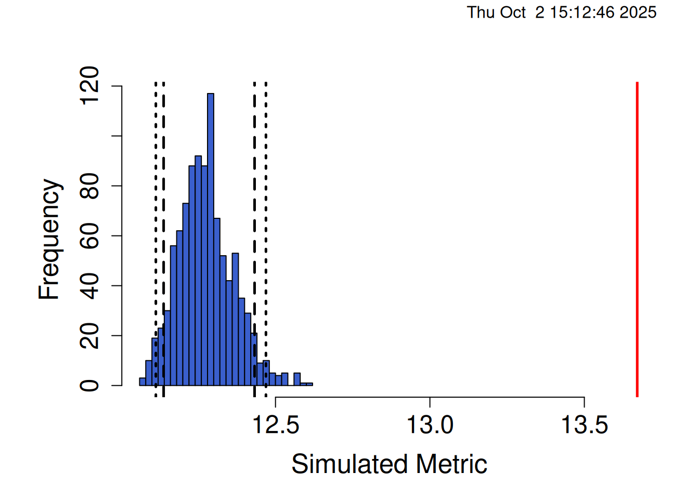
# 网络嵌套性零模型
# 使用vegan包中的permatswap函数
net_null <- permatswap(pollination_network, method = "quasiswap", times = 1000)
# 提取模拟结果并计算嵌套性
null_results <- sapply(net_null$perm, function(mat) {
nested(mat, method = "NODF2")
})
# 计算观测嵌套性
obs_nestedness <- nested(pollination_network, method = "NODF2")
# 计算p值
p_value <- mean(null_results >= obs_nestedness)
cat("观测嵌套性:", obs_nestedness, "\n")## 观测嵌套性: 25.46973## p值: 0.628# 可视化零分布
hist(null_results, main = "嵌套性零分布", xlab = "嵌套性指数")
abline(v = obs_nestedness, col = "red", lwd = 2)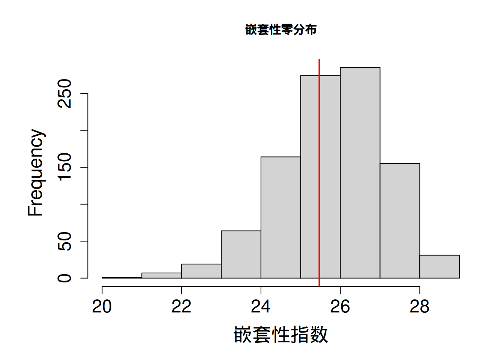
7.10.5 生态学应用与保护意义
保护生物学应用： - 保护区设计：基于物种共现模式优化保护区网络 - 入侵物种风险评估：检验外来物种与本地物种的相互作用模式 - 生态系统恢复：评估恢复后群落的组装过程
群落生态学应用： - 群落构建机制：区分环境过滤、竞争排斥、扩散限制的相对重要性 - 生物多样性维持：理解物种共存机制 - 生态系统功能：检验网络结构与生态系统功能的关系
全球变化研究： - 气候变化响应：监测群落结构对气候变化的响应 - 栖息地破碎化：检验生境破碎对物种相互作用的影响 - 物种分布变化：预测物种分布范围变化的生态后果
生态学意义：零模型检验为生态学家提供了强大的统计工具来检验生态学假说。通过构建合理的随机期望，我们能够更可靠地推断观测生态模式的形成机制，为理解生态过程、预测生态系统变化和制定有效的保护策略提供坚实的科学基础。这些方法特别适合处理生态学中常见的复杂模式和小样本问题，是现代生态学研究不可或缺的统计工具。